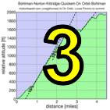
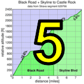

|  |  |
 |
| pl | # | name | team | cat | time | mph | fph | %median |
|---|---|---|---|---|---|---|---|---|
| 1 | 126 | Lisa Penzel | The Brown Zone | 45+ | 4:44.15 | 9.50 | 4497 | 124.07 |
| 2 | 35 | Sugar Brown | The Brown Zone | Fat Camp | 5:19.57 | 8.45 | 3999 | 110.32 |
| 3 | 27 | Kate Bergeron | Diablo | 40+ | 5:29.68 | 8.19 | 3876 | 106.94 |
| 4 | 147 | Marty Scott | LGBRC | 55+ | 5:34.23 | 8.08 | 3824 | 105.48 |
| 5 | 209 | Janet Gardner | Sr's & Mr's of No Mercy | 45+ | 5:40.36 | 7.93 | 3755 | 103.58 |
| 6 | 301 | Amy Bruski | Sr's & Mr's of No Mercy | 35+ | 5:43.15 | 7.87 | 3724 | 102.74 |
| 7 | 223 | Eva Silverstein | Western Wheelers | 40+ | 5:52.00 | 7.67 | 3631 | 100.15 |
| 8 | 318 | Trish Pacheco | Sr's & Mr's of No Mercy | 45+ | 5:52.55 | 7.66 | 3625 | 100.00 |
| 9 | 404 | Heidi Fraser | Cushman & Wakefield Racing | 50+ | 7:44.56 | 5.81 | 2751 | 75.89 |
| pl | # | name | team | cat | time | mph | fph | %median |
|---|---|---|---|---|---|---|---|---|
| 1 | 49 | David Collet | Pen Velo/Pomodoro | 40+ | 3:54.28 | 11.52 | 5455 | 124.74 |
| 2 | 132 | Stefano Profumo | Bike Trip/Symantec | 35+ | 3:57.30 | 11.38 | 5386 | 123.16 |
| 3 | 403 | Scott Frake | Alto Velo | 50+ | 3:58.06 | 11.34 | 5368 | 122.77 |
| 4 | 53 | Tracy Colwell | Team Colwell | 45+ | 3:59.86 | 11.26 | 5328 | 121.85 |
| 5 | 207 | Robert Easley | Sr's & Mr's of No Mercy | 45+ | 4:07.96 | 10.89 | 5154 | 117.86 |
| 6 | 14 | Rich McLovin Brown | The Brown Zone | 35+ | 4:08.34 | 10.87 | 5146 | 117.68 |
| 7 | 409 | Bill Laddish | Team CVC | 40+ | 4:12.12 | 10.71 | 5069 | 115.92 |
| 8 | 402 | Chris Evans | Pen Velo/Pomodoro | 30+ | 4:16.20 | 10.54 | 4988 | 114.07 |
| 9 | 152 | Daryl Spano | San Jose Bike Club | 45+ | 4:16.25 | 10.54 | 4987 | 114.05 |
| 10 | 73 | Chris Furgiuele | Studio Velo Racing | 40+ | 4:18.10 | 10.46 | 4952 | 113.24 |
| 11 | 31 | Blue Brown | The Brown Zone | 35+ | 4:20.31 | 10.37 | 4909 | 112.27 |
| 12 | 316 | Bogdan Marian | 30+ | 4:23.56 | 10.24 | 4849 | 110.89 | |
| 13 | 156 | Todd Studenicka | San Jose Bike Club | 45+ | 4:25.26 | 10.18 | 4818 | 110.18 |
| 14 | 327 | Brandon Smith | Team CVC | 25+ | 4:26.79 | 10.12 | 4790 | 109.55 |
| 15 | 412 | Kieran Sherlock | Western Wheelers | 45+ | 4:31.79 | 9.93 | 4702 | 107.53 |
| 16 | 98 | Michael Kowalchuk | 25+ | 4:33.39 | 9.88 | 4674 | 106.90 | |
| 17 | 166 | William Yee | Team CVC | 35+ | 4:33.86 | 9.86 | 4667 | 106.72 |
| 18 | 32 | Habañero Brown | The Brown Zone | Wheel Horse | 4:34.09 | 9.85 | 4663 | 106.63 |
| 19 | 114 | Shahram Moatazedi | LGBRC | 40+ | 4:34.59 | 9.83 | 4654 | 106.44 |
| 20 | 83 | Rich Hill | LGBRC | 45+ | 4:35.94 | 9.78 | 4631 | 105.91 |
| 21 | 122 | Bart Niechwiej | 35+ | 4:37.17 | 9.74 | 4611 | 105.45 | |
| 22 | 79 | Bill Harkola | Pen Velo/Pomodoro | 55+ | 4:39.18 | 9.67 | 4578 | 104.68 |
| 23 | 212 | Peter Ingram | Steely Man | 55+ | 4:47.93 | 9.38 | 4438 | 101.50 |
| 24 | 204 | Bryn Dole | Low-Key | 40+ | 4:48.73 | 9.35 | 4426 | 101.22 |
| 25 | 411 | Lucas Pereira | 40+ | 4:49.13 | 9.34 | 4420 | 101.08 | |
| 26 | 58 | Andy Crews | Diablo | 40+ | 4:51.10 | 9.28 | 4390 | 100.40 |
| 27 | 95 | Mark King | Equipe Flamme Rouge | 45+ | 4:51.25 | 9.27 | 4388 | 100.34 |
| 28 | 410 | Paul McKenzie | Sr's & Mr's of No Mercy | 55+ | 4:52.81 | 9.22 | 4364 | 99.81 |
| 29 | 408 | Tom K. | Palo Verde Velo | 4:55.37 | 9.14 | 4327 | 98.95 | |
| 30 | 171 | Phil Lovaglio | Lyme Zone | 55+ | 5:04.97 | 8.85 | 4191 | 95.83 |
| 31 | 135 | Mihai R. | 30+ | 5:06.36 | 8.81 | 4172 | 95.40 | |
| 32 | 62 | Mike Davis | LGBRC | 45+ | 5:12.12 | 8.65 | 4094 | 93.64 |
| 33 | 12 | Will von Kaenel | LGBRC | 55+ | 5:12.80 | 8.63 | 4086 | 93.43 |
| 34 | 406 | Martin Hyland | Diablo | 55+ | 5:13.25 | 8.62 | 4080 | 93.30 |
| 35 | 300 | Billy Bob Brown | The Brown Zone | 50+ | 5:14.67 | 8.58 | 4061 | 92.88 |
| 36 | 65 | Giles Douglas | 40 TODAY | 5:17.57 | 8.50 | 4024 | 92.03 | |
| 37 | 37 | Scott Byer | 45+ | 5:17.75 | 8.50 | 4022 | 91.98 | |
| 38 | 326 | Jeff Shute | 35+ | 5:22.64 | 8.37 | 3961 | 90.58 | |
| 39 | 23 | Daniel Aminzade | 30+ | 5:23.14 | 8.36 | 3955 | 90.44 | |
| 40 | 405 | Bruce Gardner | Sr's & Mr's of No Mercy | 40+ | 5:34.84 | 8.06 | 3817 | 87.28 |
| 41 | 71 | Stephen Fong | CyclePath Racing | 0 | 5:39.18 | 7.96 | 3768 | 86.17 |
| 42 | 105 | Doug MacPherson | Pen Velo/Pomodoro | 40+ | 5:41.40 | 7.91 | 3743 | 85.60 |
| 43 | 401 | Gino Cetani | REI | 40+ | 5:43.37 | 7.86 | 3722 | 85.11 |
| 44 | 328 | Ray Smith | Team CVC | 55+ | 5:44.63 | 7.83 | 3708 | 84.80 |
| 45 | 414 | Tim Sullivan | 50+ | 5:44.80 | 7.83 | 3706 | 84.76 | |
| 46 | 407 | Brandon Iles | 30+ | 5:48.64 | 7.74 | 3666 | 83.83 | |
| 47 | 161 | Greg Watson | Palo Verde Velo | 50+ | 5:56.10 | 7.58 | 3589 | 82.07 |
| 48 | 125 | Frank Paysen | autonomous masochist | 50+ | 5:58.54 | 7.53 | 3564 | 81.52 |
| 49 | 400 | Michael Andalora | Bike Trip/Symantec | 60+ | 5:58.62 | 7.53 | 3564 | 81.50 |
| 50 | 203 | Kevin Colagiovanni | Team Dud | 30+ | 6:16.68 | 7.17 | 3393 | 77.59 |
| 51 | 230 | Kris McQueen | Diablo | 35+ | 6:28.92 | 6.94 | 3286 | 75.15 |
| 52 | 304 | Paul Cothenet | 25+ | 6:31.56 | 6.90 | 3264 | 74.64 | |
| 53 | 160 | Luis Valente | Palo Verde Velo | 50+ | 6:34.57 | 6.84 | 3239 | 74.07 |
| 54 | 150 | Gregory P Smith | Zombie Raccoon | 35+ | 6:43.81 | 6.69 | 3165 | 72.38 |
| 55 | 130 | Mark Powers | Pen Velo/Pomodoro | 55+ | 6:45.40 | 6.66 | 3152 | 72.09 |
| 56 | 133 | Alec Proudfoot | DaSH | 50+ | 7:08.20 | 6.31 | 2985 | 68.25 |
| 57 | 413 | Liam Sherlock | Western Wheelers | Junior | 7:23.58 | 6.09 | 2881 | 65.89 |
| 58 | 415 | Jeff Weitzman | Palo Verde Velo | 7:24.25 | 6.08 | 2877 | 65.79 | |
| 59 | 151 | Kevin M. Smith | LGBRC | 50+ | 7:26.12 | 6.05 | 2865 | 65.51 |
| 59 | 48 | John Clarke | 40+ | 7:26.12 | 6.05 | 2865 | 65.51 |
| pl | # | name | team | cat | time | mph | fph | %median |
|---|---|---|---|---|---|---|---|---|
| 1 | 126 | Lisa Penzel | The Brown Zone | 45+ | 2:41.97 | 0.00 | 0 | 136.01 |
| 2 | 27 | Kate Bergeron | Diablo | 40+ | 3:14.36 | 0.00 | 0 | 113.35 |
| 3 | 35 | Sugar Brown | The Brown Zone | Fat Camp | 3:20.62 | 0.00 | 0 | 109.80 |
| 4 | 147 | Marty Scott | LGBRC | 55+ | 3:23.11 | 0.00 | 0 | 108.46 |
| 5 | 318 | Trish Pacheco | Sr's & Mr's of No Mercy | 45+ | 3:25.32 | 0.00 | 0 | 107.29 |
| 6 | 209 | Janet Gardner | Sr's & Mr's of No Mercy | 45+ | 3:31.78 | 0.00 | 0 | 104.02 |
| 7 | 223 | Eva Silverstein | Western Wheelers | 40+ | 3:33.11 | 0.00 | 0 | 103.37 |
| 8 | 301 | Amy Bruski | Sr's & Mr's of No Mercy | 35+ | 3:36.56 | 0.00 | 0 | 101.72 |
| 9 | 404 | Heidi Fraser | Cushman & Wakefield Racing | 50+ | 5:15.67 | 0.00 | 0 | 69.79 |
| pl | # | name | team | cat | time | mph | fph | %median |
|---|---|---|---|---|---|---|---|---|
| 1 | 53 | Tracy Colwell | Team Colwell | 45+ | 2:20.78 | 0.00 | 0 | 129.72 |
| 2 | 132 | Stefano Profumo | Bike Trip/Symantec | 35+ | 2:22.11 | 0.00 | 0 | 128.51 |
| 3 | 49 | David Collet | Pen Velo/Pomodoro | 40+ | 2:22.81 | 0.00 | 0 | 127.87 |
| 4 | 403 | Scott Frake | Alto Velo | 50+ | 2:26.15 | 0.00 | 0 | 124.96 |
| 5 | 207 | Robert Easley | Sr's & Mr's of No Mercy | 45+ | 2:26.62 | 0.00 | 0 | 124.55 |
| 6 | 152 | Daryl Spano | San Jose Bike Club | 45+ | 2:28.99 | 0.00 | 0 | 122.58 |
| 7 | 166 | William Yee | Team CVC | 35+ | 2:30.18 | 0.00 | 0 | 121.60 |
| 8 | 73 | Chris Furgiuele | Studio Velo Racing | 40+ | 2:30.84 | 0.00 | 0 | 121.07 |
| 9 | 14 | Rich McLovin Brown | The Brown Zone | 35+ | 2:33.44 | 0.00 | 0 | 119.02 |
| 10 | 316 | Bogdan Marian | 30+ | 2:33.63 | 0.00 | 0 | 118.87 | |
| 11 | 409 | Bill Laddish | Team CVC | 40+ | 2:34.52 | 0.00 | 0 | 118.19 |
| 12 | 327 | Brandon Smith | Team CVC | 25+ | 2:35.63 | 0.00 | 0 | 117.34 |
| 13 | 31 | Blue Brown | The Brown Zone | 35+ | 2:38.80 | 0.00 | 0 | 115.01 |
| 14 | 156 | Todd Studenicka | San Jose Bike Club | 45+ | 2:39.19 | 0.00 | 0 | 114.72 |
| 15 | 122 | Bart Niechwiej | 35+ | 2:40.65 | 0.00 | 0 | 113.68 | |
| 16 | 402 | Chris Evans | Pen Velo/Pomodoro | 30+ | 2:42.24 | 0.00 | 0 | 112.57 |
| 17 | 412 | Kieran Sherlock | Western Wheelers | 45+ | 2:43.53 | 0.00 | 0 | 111.68 |
| 18 | 114 | Shahram Moatazedi | LGBRC | 40+ | 2:44.56 | 0.00 | 0 | 110.97 |
| 19 | 98 | Michael Kowalchuk | 25+ | 2:47.44 | 0.00 | 0 | 109.07 | |
| 20 | 79 | Bill Harkola | Pen Velo/Pomodoro | 55+ | 2:48.69 | 0.00 | 0 | 108.26 |
| 21 | 83 | Rich Hill | LGBRC | 45+ | 2:50.06 | 0.00 | 0 | 107.39 |
| 22 | 32 | Habañero Brown | The Brown Zone | Wheel Horse | 2:50.67 | 0.00 | 0 | 107.01 |
| 23 | 204 | Bryn Dole | Low-Key | 40+ | 2:56.75 | 0.00 | 0 | 103.33 |
| 24 | 212 | Peter Ingram | Steely Man | 55+ | 2:57.00 | 0.00 | 0 | 103.17 |
| 25 | 410 | Paul McKenzie | Sr's & Mr's of No Mercy | 55+ | 3:01.77 | 0.00 | 0 | 100.47 |
| 26 | 408 | Tom K. | Palo Verde Velo | 3:02.15 | 0.00 | 0 | 100.26 | |
| 27 | 95 | Mark King | Equipe Flamme Rouge | 45+ | 3:02.62 | 0.00 | 0 | 100.00 |
| 28 | 62 | Mike Davis | LGBRC | 45+ | 3:04.43 | 0.00 | 0 | 99.02 |
| 29 | 58 | Andy Crews | Diablo | 40+ | 3:05.25 | 0.00 | 0 | 98.58 |
| 30 | 135 | Mihai R. | 30+ | 3:05.28 | 0.00 | 0 | 98.57 | |
| 31 | 171 | Phil Lovaglio | Lyme Zone | 55+ | 3:09.18 | 0.00 | 0 | 96.54 |
| 32 | 411 | Lucas Pereira | 40+ | 3:10.03 | 0.00 | 0 | 96.11 | |
| 33 | 12 | Will von Kaenel | LGBRC | 55+ | 3:11.63 | 0.00 | 0 | 95.30 |
| 34 | 37 | Scott Byer | 45+ | 3:13.53 | 0.00 | 0 | 94.37 | |
| 35 | 71 | Stephen Fong | CyclePath Racing | 0 | 3:14.75 | 0.00 | 0 | 93.77 |
| 36 | 300 | Billy Bob Brown | The Brown Zone | 50+ | 3:16.87 | 0.00 | 0 | 92.77 |
| 37 | 65 | Giles Douglas | 40 TODAY | 3:19.90 | 0.00 | 0 | 91.36 | |
| 38 | 405 | Bruce Gardner | Sr's & Mr's of No Mercy | 40+ | 3:20.06 | 0.00 | 0 | 91.29 |
| 39 | 326 | Jeff Shute | 35+ | 3:21.06 | 0.00 | 0 | 90.83 | |
| 40 | 23 | Daniel Aminzade | 30+ | 3:21.61 | 0.00 | 0 | 90.59 | |
| 41 | 105 | Doug MacPherson | Pen Velo/Pomodoro | 40+ | 3:25.09 | 0.00 | 0 | 89.04 |
| 42 | 414 | Tim Sullivan | 50+ | 3:28.00 | 0.00 | 0 | 87.80 | |
| 43 | 328 | Ray Smith | Team CVC | 55+ | 3:28.40 | 0.00 | 0 | 87.63 |
| 44 | 401 | Gino Cetani | REI | 40+ | 3:29.28 | 0.00 | 0 | 87.26 |
| 45 | 406 | Martin Hyland | Diablo | 55+ | 3:31.53 | 0.00 | 0 | 86.33 |
| 46 | 125 | Frank Paysen | autonomous masochist | 50+ | 3:34.90 | 0.00 | 0 | 84.98 |
| 47 | 407 | Brandon Iles | 30+ | 3:42.40 | 0.00 | 0 | 82.12 | |
| 48 | 400 | Michael Andalora | Bike Trip/Symantec | 60+ | 3:50.77 | 0.00 | 0 | 79.14 |
| 49 | 203 | Kevin Colagiovanni | Team Dud | 30+ | 3:50.84 | 0.00 | 0 | 79.11 |
| 50 | 161 | Greg Watson | Palo Verde Velo | 50+ | 3:52.03 | 0.00 | 0 | 78.71 |
| 51 | 304 | Paul Cothenet | 25+ | 3:52.17 | 0.00 | 0 | 78.66 | |
| 52 | 160 | Luis Valente | Palo Verde Velo | 50+ | 3:56.90 | 0.00 | 0 | 77.09 |
| 53 | 230 | Kris McQueen | Diablo | 35+ | 4:00.31 | 0.00 | 0 | 76.00 |
| 54 | 150 | Gregory P Smith | Zombie Raccoon | 35+ | 4:11.43 | 0.00 | 0 | 72.63 |
| 55 | 151 | Kevin M. Smith | LGBRC | 50+ | 4:17.17 | 0.00 | 0 | 71.02 |
| 56 | 130 | Mark Powers | Pen Velo/Pomodoro | 55+ | 4:20.81 | 0.00 | 0 | 70.02 |
| 57 | 415 | Jeff Weitzman | Palo Verde Velo | 4:30.75 | 0.00 | 0 | 67.45 | |
| 58 | 133 | Alec Proudfoot | DaSH | 50+ | 4:32.34 | 0.00 | 0 | 67.06 |
| 59 | 48 | John Clarke | 40+ | 4:46.55 | 0.00 | 0 | 63.73 | |
| 60 | 413 | Liam Sherlock | Western Wheelers | Junior | 4:58.13 | 0.00 | 0 | 61.26 |
| pl | # | name | team | cat | time | mph | fph | %median |
|---|---|---|---|---|---|---|---|---|
| 1 | 35 | Sugar Brown | The Brown Zone | Fat Camp | 1:58.95 | 0.00 | 0 | 116.76 |
| 2 | 126 | Lisa Penzel | The Brown Zone | 45+ | 2:02.17 | 0.00 | 0 | 113.69 |
| 3 | 301 | Amy Bruski | Sr's & Mr's of No Mercy | 35+ | 2:06.59 | 0.00 | 0 | 109.72 |
| 4 | 209 | Janet Gardner | Sr's & Mr's of No Mercy | 45+ | 2:08.56 | 0.00 | 0 | 108.04 |
| 5 | 147 | Marty Scott | LGBRC | 55+ | 2:11.11 | 0.00 | 0 | 105.93 |
| 6 | 27 | Kate Bergeron | Diablo | 40+ | 2:15.31 | 0.00 | 0 | 102.65 |
| 7 | 223 | Eva Silverstein | Western Wheelers | 40+ | 2:18.88 | 0.00 | 0 | 100.00 |
| 8 | 318 | Trish Pacheco | Sr's & Mr's of No Mercy | 45+ | 2:27.21 | 0.00 | 0 | 94.34 |
| 9 | 404 | Heidi Fraser | Cushman & Wakefield Racing | 50+ | 2:28.90 | 0.00 | 0 | 93.28 |
| pl | # | name | team | cat | time | mph | fph | %median |
|---|---|---|---|---|---|---|---|---|
| 1 | 49 | David Collet | Pen Velo/Pomodoro | 40+ | 1:31.46 | 0.00 | 0 | 125.88 |
| 2 | 403 | Scott Frake | Alto Velo | 50+ | 1:31.90 | 0.00 | 0 | 125.29 |
| 3 | 402 | Chris Evans | Pen Velo/Pomodoro | 30+ | 1:33.96 | 0.00 | 0 | 122.53 |
| 4 | 14 | Rich McLovin Brown | The Brown Zone | 35+ | 1:34.89 | 0.00 | 0 | 121.34 |
| 5 | 132 | Stefano Profumo | Bike Trip/Symantec | 35+ | 1:35.18 | 0.00 | 0 | 120.97 |
| 6 | 409 | Bill Laddish | Team CVC | 40+ | 1:37.60 | 0.00 | 0 | 117.96 |
| 7 | 53 | Tracy Colwell | Team Colwell | 45+ | 1:39.06 | 0.00 | 0 | 116.23 |
| 8 | 411 | Lucas Pereira | 40+ | 1:39.09 | 0.00 | 0 | 116.19 | |
| 9 | 207 | Robert Easley | Sr's & Mr's of No Mercy | 45+ | 1:41.34 | 0.00 | 0 | 113.62 |
| 10 | 31 | Blue Brown | The Brown Zone | 35+ | 1:41.52 | 0.00 | 0 | 113.42 |
| 11 | 406 | Martin Hyland | Diablo | 55+ | 1:41.70 | 0.00 | 0 | 113.22 |
| 12 | 32 | Habañero Brown | The Brown Zone | Wheel Horse | 1:43.40 | 0.00 | 0 | 111.34 |
| 13 | 58 | Andy Crews | Diablo | 40+ | 1:45.84 | 0.00 | 0 | 108.79 |
| 14 | 83 | Rich Hill | LGBRC | 45+ | 1:45.87 | 0.00 | 0 | 108.75 |
| 15 | 98 | Michael Kowalchuk | 25+ | 1:45.93 | 0.00 | 0 | 108.68 | |
| 16 | 156 | Todd Studenicka | San Jose Bike Club | 45+ | 1:46.06 | 0.00 | 0 | 108.56 |
| 17 | 73 | Chris Furgiuele | Studio Velo Racing | 40+ | 1:47.25 | 0.00 | 0 | 107.36 |
| 18 | 152 | Daryl Spano | San Jose Bike Club | 45+ | 1:47.25 | 0.00 | 0 | 107.35 |
| 19 | 412 | Kieran Sherlock | Western Wheelers | 45+ | 1:48.25 | 0.00 | 0 | 106.35 |
| 20 | 95 | Mark King | Equipe Flamme Rouge | 45+ | 1:48.62 | 0.00 | 0 | 106.00 |
| 21 | 316 | Bogdan Marian | 30+ | 1:49.92 | 0.00 | 0 | 104.75 | |
| 22 | 114 | Shahram Moatazedi | LGBRC | 40+ | 1:50.00 | 0.00 | 0 | 104.66 |
| 23 | 79 | Bill Harkola | Pen Velo/Pomodoro | 55+ | 1:50.49 | 0.00 | 0 | 104.21 |
| 24 | 212 | Peter Ingram | Steely Man | 55+ | 1:50.92 | 0.00 | 0 | 103.80 |
| 25 | 410 | Paul McKenzie | Sr's & Mr's of No Mercy | 55+ | 1:51.03 | 0.00 | 0 | 103.69 |
| 26 | 327 | Brandon Smith | Team CVC | 25+ | 1:51.15 | 0.00 | 0 | 103.59 |
| 27 | 204 | Bryn Dole | Low-Key | 40+ | 1:51.97 | 0.00 | 0 | 102.82 |
| 28 | 408 | Tom K. | Palo Verde Velo | 1:53.21 | 0.00 | 0 | 101.70 | |
| 29 | 171 | Phil Lovaglio | Lyme Zone | 55+ | 1:55.78 | 0.00 | 0 | 99.45 |
| 30 | 122 | Bart Niechwiej | 35+ | 1:56.50 | 0.00 | 0 | 98.82 | |
| 31 | 65 | Giles Douglas | 40 TODAY | 1:57.67 | 0.00 | 0 | 97.85 | |
| 32 | 300 | Billy Bob Brown | The Brown Zone | 50+ | 1:57.79 | 0.00 | 0 | 97.74 |
| 33 | 135 | Mihai R. | 30+ | 2:01.07 | 0.00 | 0 | 95.09 | |
| 34 | 12 | Will von Kaenel | LGBRC | 55+ | 2:01.15 | 0.00 | 0 | 95.03 |
| 35 | 23 | Daniel Aminzade | 30+ | 2:01.53 | 0.00 | 0 | 94.74 | |
| 36 | 326 | Jeff Shute | 35+ | 2:01.57 | 0.00 | 0 | 94.70 | |
| 37 | 166 | William Yee | Team CVC | 35+ | 2:03.67 | 0.00 | 0 | 93.10 |
| 38 | 161 | Greg Watson | Palo Verde Velo | 50+ | 2:04.06 | 0.00 | 0 | 92.80 |
| 39 | 37 | Scott Byer | 45+ | 2:04.20 | 0.00 | 0 | 92.70 | |
| 40 | 407 | Brandon Iles | 30+ | 2:06.25 | 0.00 | 0 | 91.20 | |
| 41 | 62 | Mike Davis | LGBRC | 45+ | 2:07.68 | 0.00 | 0 | 90.17 |
| 42 | 400 | Michael Andalora | Bike Trip/Symantec | 60+ | 2:07.84 | 0.00 | 0 | 90.06 |
| 43 | 401 | Gino Cetani | REI | 40+ | 2:14.09 | 0.00 | 0 | 85.87 |
| 44 | 405 | Bruce Gardner | Sr's & Mr's of No Mercy | 40+ | 2:14.78 | 0.00 | 0 | 85.43 |
| 45 | 328 | Ray Smith | Team CVC | 55+ | 2:16.24 | 0.00 | 0 | 84.51 |
| 46 | 105 | Doug MacPherson | Pen Velo/Pomodoro | 40+ | 2:16.31 | 0.00 | 0 | 84.47 |
| 47 | 414 | Tim Sullivan | 50+ | 2:16.80 | 0.00 | 0 | 84.17 | |
| 48 | 125 | Frank Paysen | autonomous masochist | 50+ | 2:23.62 | 0.00 | 0 | 80.16 |
| 49 | 71 | Stephen Fong | CyclePath Racing | 0 | 2:24.42 | 0.00 | 0 | 79.73 |
| 50 | 130 | Mark Powers | Pen Velo/Pomodoro | 55+ | 2:24.57 | 0.00 | 0 | 79.64 |
| 51 | 413 | Liam Sherlock | Western Wheelers | Junior | 2:25.44 | 0.00 | 0 | 79.16 |
| 52 | 203 | Kevin Colagiovanni | Team Dud | 30+ | 2:25.82 | 0.00 | 0 | 78.95 |
| 53 | 230 | Kris McQueen | Diablo | 35+ | 2:28.59 | 0.00 | 0 | 77.48 |
| 54 | 150 | Gregory P Smith | Zombie Raccoon | 35+ | 2:32.37 | 0.00 | 0 | 75.57 |
| 55 | 133 | Alec Proudfoot | DaSH | 50+ | 2:35.87 | 0.00 | 0 | 73.87 |
| 56 | 160 | Luis Valente | Palo Verde Velo | 50+ | 2:37.65 | 0.00 | 0 | 73.03 |
| 57 | 304 | Paul Cothenet | 25+ | 2:39.38 | 0.00 | 0 | 72.24 | |
| 58 | 48 | John Clarke | 40+ | 2:39.56 | 0.00 | 0 | 72.16 | |
| 59 | 415 | Jeff Weitzman | Palo Verde Velo | 2:53.49 | 0.00 | 0 | 66.37 | |
| 60 | 151 | Kevin M. Smith | LGBRC | 50+ | 3:08.93 | 0.00 | 0 | 60.94 |
| pl | # | name | team | cat | time | mph | fph | %median |
|---|---|---|---|---|---|---|---|---|
| 1 | 126 | Lisa Penzel | The Brown Zone | 45+ | 2:39.31 | 7.91 | 6101 | 146.25 |
| 2 | 35 | Sugar Brown | The Brown Zone | Fat Camp | 3:22.28 | 6.23 | 4805 | 115.18 |
| 3 | 209 | Janet Gardner | Sr's & Mr's of No Mercy | 45+ | 3:22.68 | 6.22 | 4796 | 114.96 |
| 4 | 318 | Trish Pacheco | Sr's & Mr's of No Mercy | 45+ | 3:23.40 | 6.19 | 4779 | 114.55 |
| 5 | 147 | Marty Scott | LGBRC | 55+ | 3:36.38 | 5.82 | 4492 | 107.68 |
| 6 | 223 | Eva Silverstein | Western Wheelers | 40+ | 3:48.78 | 5.51 | 4248 | 101.84 |
| 7 | 404 | Heidi Fraser | Cushman & Wakefield Racing | 50+ | 4:54.55 | 4.28 | 3300 | 79.10 |
| 8 | 301 | Amy Bruski | Sr's & Mr's of No Mercy | 35+ | 5:50.34 | 3.60 | 2774 | 66.51 |
| 9 | 27 | Kate Bergeron | Diablo | 40+ | 8:03.06 | 2.61 | 2012 | 48.23 |
| pl | # | name | team | cat | time | mph | fph | %median |
|---|---|---|---|---|---|---|---|---|
| 1 | 409 | Bill Laddish | Team CVC | 40+ | 1:11.03 | 17.74 | 13682 | 271.90 |
| 2 | 122 | Bart Niechwiej | 35+ | 2:01.37 | 10.38 | 8009 | 159.15 | |
| 3 | 14 | Rich McLovin Brown | The Brown Zone | 35+ | 2:21.63 | 8.90 | 6862 | 136.37 |
| 4 | 403 | Scott Frake | Alto Velo | 50+ | 2:22.37 | 8.85 | 6827 | 135.67 |
| 5 | 49 | David Collet | Pen Velo/Pomodoro | 40+ | 2:23.49 | 8.78 | 6774 | 134.62 |
| 6 | 132 | Stefano Profumo | Bike Trip/Symantec | 35+ | 2:28.28 | 8.50 | 6555 | 130.26 |
| 7 | 53 | Tracy Colwell | Team Colwell | 45+ | 2:29.00 | 8.46 | 6523 | 129.63 |
| 8 | 31 | Blue Brown | The Brown Zone | 35+ | 2:29.50 | 8.43 | 6501 | 129.20 |
| 9 | 98 | Michael Kowalchuk | 25+ | 2:30.97 | 8.35 | 6438 | 127.94 | |
| 10 | 152 | Daryl Spano | San Jose Bike Club | 45+ | 2:33.00 | 8.24 | 6353 | 126.25 |
| 11 | 207 | Robert Easley | Sr's & Mr's of No Mercy | 45+ | 2:34.21 | 8.17 | 6303 | 125.26 |
| 12 | 316 | Bogdan Marian | 30+ | 2:38.68 | 7.94 | 6125 | 121.72 | |
| 13 | 402 | Chris Evans | Pen Velo/Pomodoro | 30+ | 2:40.18 | 7.87 | 6068 | 120.59 |
| 14 | 83 | Rich Hill | LGBRC | 45+ | 2:49.90 | 7.42 | 5721 | 113.69 |
| 15 | 32 | Habañero Brown | The Brown Zone | Wheel Horse | 2:51.09 | 7.36 | 5681 | 112.89 |
| 16 | 411 | Lucas Pereira | 40+ | 2:56.06 | 7.16 | 5521 | 109.71 | |
| 17 | 204 | Bryn Dole | Low-Key | 40+ | 2:56.34 | 7.14 | 5512 | 109.53 |
| 18 | 408 | Tom K. | Palo Verde Velo | 2:57.13 | 7.11 | 5487 | 109.04 | |
| 19 | 327 | Brandon Smith | Team CVC | 25+ | 2:58.74 | 7.05 | 5438 | 108.07 |
| 20 | 410 | Paul McKenzie | Sr's & Mr's of No Mercy | 55+ | 3:00.88 | 6.97 | 5373 | 106.78 |
| 21 | 79 | Bill Harkola | Pen Velo/Pomodoro | 55+ | 3:01.37 | 6.95 | 5359 | 106.50 |
| 22 | 166 | William Yee | Team CVC | 35+ | 3:03.03 | 6.88 | 5311 | 105.53 |
| 23 | 58 | Andy Crews | Diablo | 40+ | 3:03.43 | 6.87 | 5299 | 105.30 |
| 24 | 62 | Mike Davis | LGBRC | 45+ | 3:03.96 | 6.85 | 5284 | 105.00 |
| 25 | 406 | Martin Hyland | Diablo | 55+ | 3:05.05 | 6.81 | 5253 | 104.38 |
| 26 | 156 | Todd Studenicka | San Jose Bike Club | 45+ | 3:05.06 | 6.81 | 5252 | 104.38 |
| 27 | 300 | Billy Bob Brown | The Brown Zone | 50+ | 3:08.47 | 6.69 | 5157 | 102.48 |
| 28 | 212 | Peter Ingram | Steely Man | 55+ | 3:11.84 | 6.57 | 5066 | 100.68 |
| 29 | 95 | Mark King | Equipe Flamme Rouge | 45+ | 3:13.15 | 6.52 | 5032 | 100.00 |
| 30 | 171 | Phil Lovaglio | Lyme Zone | 55+ | 3:16.50 | 6.41 | 4947 | 98.30 |
| 31 | 65 | Giles Douglas | 40 TODAY | 3:18.62 | 6.34 | 4894 | 97.25 | |
| 32 | 135 | Mihai R. | 30+ | 3:20.21 | 6.29 | 4855 | 96.47 | |
| 33 | 37 | Scott Byer | 45+ | 3:22.40 | 6.23 | 4802 | 95.43 | |
| 34 | 400 | Michael Andalora | Bike Trip/Symantec | 60+ | 3:26.27 | 6.11 | 4712 | 93.64 |
| 35 | 12 | Will von Kaenel | LGBRC | 55+ | 3:27.22 | 6.08 | 4690 | 93.21 |
| 36 | 105 | Doug MacPherson | Pen Velo/Pomodoro | 40+ | 3:29.56 | 6.01 | 4638 | 92.17 |
| 37 | 326 | Jeff Shute | 35+ | 3:30.12 | 6.00 | 4626 | 91.93 | |
| 38 | 114 | Shahram Moatazedi | LGBRC | 40+ | 3:34.25 | 5.88 | 4537 | 90.15 |
| 39 | 23 | Daniel Aminzade | 30+ | 3:35.31 | 5.85 | 4514 | 89.71 | |
| 40 | 125 | Frank Paysen | autonomous masochist | 50+ | 3:36.93 | 5.81 | 4481 | 89.04 |
| 41 | 405 | Bruce Gardner | Sr's & Mr's of No Mercy | 40+ | 3:39.49 | 5.74 | 4428 | 88.00 |
| 42 | 414 | Tim Sullivan | 50+ | 3:40.68 | 5.71 | 4405 | 87.53 | |
| 43 | 401 | Gino Cetani | REI | 40+ | 3:42.65 | 5.66 | 4365 | 86.75 |
| 44 | 161 | Greg Watson | Palo Verde Velo | 50+ | 3:48.87 | 5.51 | 4247 | 84.40 |
| 45 | 407 | Brandon Iles | 30+ | 3:50.17 | 5.47 | 4223 | 83.92 | |
| 46 | 71 | Stephen Fong | CyclePath Racing | 0 | 3:58.28 | 5.29 | 4079 | 81.06 |
| 47 | 203 | Kevin Colagiovanni | Team Dud | 30+ | 4:01.61 | 5.22 | 4023 | 79.95 |
| 48 | 230 | Kris McQueen | Diablo | 35+ | 4:04.50 | 5.15 | 3975 | 79.00 |
| 49 | 304 | Paul Cothenet | 25+ | 4:05.50 | 5.13 | 3959 | 78.68 | |
| 50 | 412 | Kieran Sherlock | Western Wheelers | 45+ | 4:09.03 | 5.06 | 3903 | 77.56 |
| 51 | 73 | Chris Furgiuele | Studio Velo Racing | 40+ | 4:12.13 | 5.00 | 3855 | 76.61 |
| 52 | 160 | Luis Valente | Palo Verde Velo | 50+ | 4:12.43 | 4.99 | 3850 | 76.52 |
| 53 | 328 | Ray Smith | Team CVC | 55+ | 4:16.82 | 4.91 | 3785 | 75.21 |
| 54 | 150 | Gregory P Smith | Zombie Raccoon | 35+ | 4:23.99 | 4.77 | 3682 | 73.17 |
| 55 | 151 | Kevin M. Smith | LGBRC | 50+ | 4:42.38 | 4.46 | 3442 | 68.40 |
| 56 | 415 | Jeff Weitzman | Palo Verde Velo | 4:42.80 | 4.46 | 3437 | 68.30 | |
| 57 | 133 | Alec Proudfoot | DaSH | 50+ | 4:43.67 | 4.44 | 3427 | 68.09 |
| 58 | 413 | Liam Sherlock | Western Wheelers | Junior | 5:10.81 | 4.05 | 3127 | 62.15 |
| 59 | 48 | John Clarke | 40+ | 5:14.85 | 4.00 | 3087 | 61.35 | |
| 60 | 130 | Mark Powers | Pen Velo/Pomodoro | 55+ | 5:49.35 | 3.61 | 2782 | 55.29 |
| pl | # | name | team | cat | time | mph | fph | %median |
|---|---|---|---|---|---|---|---|---|
| 1 | 126 | Lisa Penzel | The Brown Zone | 45+ | 1:45.90 | 11.90 | 6118 | 140.50 |
| 2 | 35 | Sugar Brown | The Brown Zone | Fat Camp | 2:14.66 | 9.36 | 4812 | 110.50 |
| 3 | 318 | Trish Pacheco | Sr's & Mr's of No Mercy | 45+ | 2:15.18 | 9.32 | 4793 | 110.07 |
| 4 | 27 | Kate Bergeron | Diablo | 40+ | 2:16.59 | 9.22 | 4744 | 108.94 |
| 5 | 147 | Marty Scott | LGBRC | 55+ | 2:21.69 | 8.89 | 4573 | 105.01 |
| 6 | 209 | Janet Gardner | Sr's & Mr's of No Mercy | 45+ | 2:24.43 | 8.72 | 4487 | 103.03 |
| 7 | 301 | Amy Bruski | Sr's & Mr's of No Mercy | 35+ | 2:27.68 | 8.53 | 4388 | 100.76 |
| 8 | 223 | Eva Silverstein | Western Wheelers | 40+ | 2:31.32 | 8.33 | 4282 | 98.33 |
| 9 | 404 | Heidi Fraser | Cushman & Wakefield Racing | 50+ | 3:26.00 | 6.12 | 3146 | 72.24 |
| pl | # | name | team | cat | time | mph | fph | %median |
|---|---|---|---|---|---|---|---|---|
| 1 | 49 | David Collet | Pen Velo/Pomodoro | 40+ | 1:29.78 | 14.03 | 7218 | 137.40 |
| 2 | 73 | Chris Furgiuele | Studio Velo Racing | 40+ | 1:29.96 | 14.01 | 7203 | 137.13 |
| 3 | 316 | Bogdan Marian | 30+ | 1:30.00 | 14.00 | 7200 | 137.07 | |
| 4 | 132 | Stefano Profumo | Bike Trip/Symantec | 35+ | 1:33.90 | 13.42 | 6900 | 131.36 |
| 5 | 53 | Tracy Colwell | Team Colwell | 45+ | 1:34.59 | 13.32 | 6851 | 130.42 |
| 6 | 14 | Rich McLovin Brown | The Brown Zone | 35+ | 1:34.68 | 13.31 | 6844 | 130.29 |
| 7 | 166 | William Yee | Team CVC | 35+ | 1:34.96 | 13.27 | 6823 | 129.89 |
| 8 | 152 | Daryl Spano | San Jose Bike Club | 45+ | 1:35.53 | 13.19 | 6783 | 129.13 |
| 9 | 207 | Robert Easley | Sr's & Mr's of No Mercy | 45+ | 1:35.70 | 13.17 | 6771 | 128.90 |
| 10 | 31 | Blue Brown | The Brown Zone | 35+ | 1:36.20 | 13.10 | 6736 | 128.23 |
| 11 | 409 | Bill Laddish | Team CVC | 40+ | 1:36.31 | 13.08 | 6728 | 128.07 |
| 12 | 402 | Chris Evans | Pen Velo/Pomodoro | 30+ | 1:37.45 | 12.93 | 6650 | 126.59 |
| 13 | 403 | Scott Frake | Alto Velo | 50+ | 1:39.28 | 12.69 | 6527 | 124.25 |
| 14 | 32 | Habañero Brown | The Brown Zone | Wheel Horse | 1:40.46 | 12.54 | 6450 | 122.80 |
| 15 | 98 | Michael Kowalchuk | 25+ | 1:45.96 | 11.89 | 6116 | 116.42 | |
| 16 | 411 | Lucas Pereira | 40+ | 1:46.75 | 11.80 | 6070 | 115.55 | |
| 17 | 114 | Shahram Moatazedi | LGBRC | 40+ | 1:47.18 | 11.75 | 6045 | 115.09 |
| 18 | 122 | Bart Niechwiej | 35+ | 1:48.20 | 11.65 | 5989 | 114.01 | |
| 19 | 327 | Brandon Smith | Team CVC | 25+ | 1:49.95 | 11.46 | 5894 | 112.20 |
| 20 | 83 | Rich Hill | LGBRC | 45+ | 1:50.35 | 11.42 | 5872 | 111.78 |
| 21 | 408 | Tom K. | Palo Verde Velo | 1:51.92 | 11.26 | 5790 | 110.22 | |
| 22 | 156 | Todd Studenicka | San Jose Bike Club | 45+ | 1:52.28 | 11.22 | 5771 | 109.86 |
| 23 | 204 | Bryn Dole | Low-Key | 40+ | 1:52.46 | 11.20 | 5762 | 109.69 |
| 24 | 62 | Mike Davis | LGBRC | 45+ | 2:00.95 | 10.42 | 5358 | 101.99 |
| 25 | 212 | Peter Ingram | Steely Man | 55+ | 2:01.39 | 10.38 | 5338 | 101.62 |
| 26 | 79 | Bill Harkola | Pen Velo/Pomodoro | 55+ | 2:01.95 | 10.33 | 5314 | 101.16 |
| 27 | 58 | Andy Crews | Diablo | 40+ | 2:02.70 | 10.27 | 5281 | 100.53 |
| 28 | 171 | Phil Lovaglio | Lyme Zone | 55+ | 2:03.35 | 10.21 | 5253 | 100.00 |
| 29 | 135 | Mihai R. | 30+ | 2:03.78 | 10.18 | 5235 | 99.66 | |
| 30 | 410 | Paul McKenzie | Sr's & Mr's of No Mercy | 55+ | 2:03.90 | 10.17 | 5230 | 99.56 |
| 31 | 37 | Scott Byer | 45+ | 2:07.37 | 9.89 | 5087 | 96.84 | |
| 32 | 300 | Billy Bob Brown | The Brown Zone | 50+ | 2:08.28 | 9.82 | 5051 | 96.16 |
| 33 | 326 | Jeff Shute | 35+ | 2:08.52 | 9.80 | 5042 | 95.99 | |
| 34 | 71 | Stephen Fong | CyclePath Racing | 0 | 2:08.53 | 9.80 | 5041 | 95.97 |
| 35 | 95 | Mark King | Equipe Flamme Rouge | 45+ | 2:08.66 | 9.79 | 5036 | 95.87 |
| 36 | 65 | Giles Douglas | 40 TODAY | 2:10.28 | 9.67 | 4974 | 94.69 | |
| 37 | 12 | Will von Kaenel | LGBRC | 55+ | 2:12.66 | 9.50 | 4884 | 92.98 |
| 38 | 406 | Martin Hyland | Diablo | 55+ | 2:14.80 | 9.35 | 4807 | 91.51 |
| 39 | 23 | Daniel Aminzade | 30+ | 2:18.06 | 9.13 | 4694 | 89.35 | |
| 40 | 105 | Doug MacPherson | Pen Velo/Pomodoro | 40+ | 2:23.13 | 8.80 | 4527 | 86.18 |
| 41 | 401 | Gino Cetani | REI | 40+ | 2:24.00 | 8.75 | 4500 | 85.66 |
| 42 | 125 | Frank Paysen | autonomous masochist | 50+ | 2:24.05 | 8.75 | 4498 | 85.64 |
| 43 | 161 | Greg Watson | Palo Verde Velo | 50+ | 2:24.99 | 8.69 | 4469 | 85.08 |
| 44 | 414 | Tim Sullivan | 50+ | 2:26.02 | 8.63 | 4438 | 84.48 | |
| 45 | 412 | Kieran Sherlock | Western Wheelers | 45+ | 2:28.30 | 8.50 | 4370 | 83.18 |
| 46 | 407 | Brandon Iles | 30+ | 2:31.75 | 8.30 | 4270 | 81.29 | |
| 47 | 230 | Kris McQueen | Diablo | 35+ | 2:32.40 | 8.27 | 4252 | 80.94 |
| 48 | 328 | Ray Smith | Team CVC | 55+ | 2:33.68 | 8.20 | 4217 | 80.27 |
| 49 | 203 | Kevin Colagiovanni | Team Dud | 30+ | 2:43.00 | 7.73 | 3975 | 75.68 |
| 50 | 400 | Michael Andalora | Bike Trip/Symantec | 60+ | 2:52.38 | 7.31 | 3759 | 71.56 |
| 51 | 304 | Paul Cothenet | 25+ | 2:52.84 | 7.29 | 3749 | 71.37 | |
| 52 | 150 | Gregory P Smith | Zombie Raccoon | 35+ | 2:53.03 | 7.28 | 3745 | 71.29 |
| 53 | 160 | Luis Valente | Palo Verde Velo | 50+ | 2:53.09 | 7.28 | 3744 | 71.27 |
| 54 | 151 | Kevin M. Smith | LGBRC | 50+ | 2:54.17 | 7.23 | 3721 | 70.83 |
| 55 | 130 | Mark Powers | Pen Velo/Pomodoro | 55+ | 3:03.75 | 6.86 | 3526 | 67.13 |
| 56 | 48 | John Clarke | 40+ | 3:08.21 | 6.69 | 3443 | 65.54 | |
| 57 | 413 | Liam Sherlock | Western Wheelers | Junior | 3:19.87 | 6.30 | 3242 | 61.72 |
| 58 | 405 | Bruce Gardner | Sr's & Mr's of No Mercy | 40+ | 3:22.28 | 6.23 | 3203 | 60.98 |
| 59 | 415 | Jeff Weitzman | Palo Verde Velo | 3:24.63 | 6.16 | 3167 | 60.28 | |
| 60 | 133 | Alec Proudfoot | DaSH | 50+ | 3:26.93 | 6.09 | 3131 | 59.61 |
| pl | # | name | team | cat | time | mph | fph | %median |
|---|---|---|---|---|---|---|---|---|
| 1 | 126 | Lisa Penzel | The Brown Zone | 45+ | 3:04.43 | 7.81 | 4919 | 121.61 |
| 2 | 35 | Sugar Brown | The Brown Zone | Fat Camp | 3:25.00 | 7.02 | 4425 | 109.42 |
| 3 | 27 | Kate Bergeron | Diablo | 40+ | 3:26.75 | 6.96 | 4388 | 108.49 |
| 4 | 147 | Marty Scott | LGBRC | 55+ | 3:28.93 | 6.89 | 4342 | 107.36 |
| 5 | 318 | Trish Pacheco | Sr's & Mr's of No Mercy | 45+ | 3:29.96 | 6.86 | 4321 | 106.83 |
| 6 | 209 | Janet Gardner | Sr's & Mr's of No Mercy | 45+ | 3:30.75 | 6.83 | 4304 | 106.43 |
| 7 | 301 | Amy Bruski | Sr's & Mr's of No Mercy | 35+ | 3:39.65 | 6.56 | 4130 | 102.12 |
| 8 | 223 | Eva Silverstein | Western Wheelers | 40+ | 3:40.12 | 6.54 | 4121 | 101.90 |
| 9 | 404 | Heidi Fraser | Cushman & Wakefield Racing | 50+ | 4:38.76 | 5.17 | 3254 | 80.46 |
| pl | # | name | team | cat | time | mph | fph | %median |
|---|---|---|---|---|---|---|---|---|
| 1 | 73 | Chris Furgiuele | Studio Velo Racing | 40+ | 2:23.13 | 10.06 | 6338 | 129.91 |
| 2 | 53 | Tracy Colwell | Team Colwell | 45+ | 2:26.05 | 9.86 | 6212 | 127.32 |
| 3 | 403 | Scott Frake | Alto Velo | 50+ | 2:28.21 | 9.72 | 6121 | 125.46 |
| 4 | 49 | David Collet | Pen Velo/Pomodoro | 40+ | 2:28.21 | 9.72 | 6121 | 125.46 |
| 5 | 14 | Rich McLovin Brown | The Brown Zone | 35+ | 2:28.82 | 9.68 | 6096 | 124.94 |
| 6 | 152 | Daryl Spano | San Jose Bike Club | 45+ | 2:30.17 | 9.59 | 6041 | 123.83 |
| 7 | 207 | Robert Easley | Sr's & Mr's of No Mercy | 45+ | 2:31.44 | 9.51 | 5990 | 122.78 |
| 8 | 405 | Bruce Gardner | Sr's & Mr's of No Mercy | 40+ | 2:31.82 | 9.48 | 5975 | 122.47 |
| 9 | 132 | Stefano Profumo | Bike Trip/Symantec | 35+ | 2:34.44 | 9.32 | 5874 | 120.39 |
| 10 | 31 | Blue Brown | The Brown Zone | 35+ | 2:37.37 | 9.15 | 5764 | 118.15 |
| 11 | 402 | Chris Evans | Pen Velo/Pomodoro | 30+ | 2:38.65 | 9.08 | 5718 | 117.21 |
| 12 | 32 | Habañero Brown | The Brown Zone | Wheel Horse | 2:39.00 | 9.06 | 5706 | 116.95 |
| 13 | 114 | Shahram Moatazedi | LGBRC | 40+ | 2:41.75 | 8.90 | 5609 | 114.96 |
| 14 | 83 | Rich Hill | LGBRC | 45+ | 2:45.15 | 8.72 | 5493 | 112.59 |
| 15 | 327 | Brandon Smith | Team CVC | 25+ | 2:47.03 | 8.62 | 5431 | 111.33 |
| 16 | 95 | Mark King | Equipe Flamme Rouge | 45+ | 2:47.19 | 8.61 | 5426 | 111.21 |
| 17 | 412 | Kieran Sherlock | Western Wheelers | 45+ | 2:47.99 | 8.57 | 5400 | 110.69 |
| 18 | 411 | Lucas Pereira | 40+ | 2:49.81 | 8.48 | 5342 | 109.50 | |
| 19 | 204 | Bryn Dole | Low-Key | 40+ | 2:50.57 | 8.44 | 5318 | 109.01 |
| 20 | 156 | Todd Studenicka | San Jose Bike Club | 45+ | 2:52.34 | 8.36 | 5264 | 107.89 |
| 21 | 98 | Michael Kowalchuk | 25+ | 2:53.27 | 8.31 | 5236 | 107.32 | |
| 22 | 410 | Paul McKenzie | Sr's & Mr's of No Mercy | 55+ | 2:56.18 | 8.17 | 5149 | 105.55 |
| 23 | 58 | Andy Crews | Diablo | 40+ | 2:56.63 | 8.15 | 5136 | 105.27 |
| 24 | 135 | Mihai R. | 30+ | 2:58.67 | 8.06 | 5078 | 104.07 | |
| 25 | 316 | Bogdan Marian | 30+ | 3:00.62 | 7.97 | 5023 | 102.95 | |
| 26 | 166 | William Yee | Team CVC | 35+ | 3:01.03 | 7.95 | 5011 | 102.72 |
| 27 | 62 | Mike Davis | LGBRC | 45+ | 3:05.94 | 7.74 | 4879 | 100.00 |
| 28 | 171 | Phil Lovaglio | Lyme Zone | 55+ | 3:07.84 | 7.67 | 4829 | 98.99 |
| 29 | 300 | Billy Bob Brown | The Brown Zone | 50+ | 3:08.58 | 7.64 | 4811 | 98.61 |
| 30 | 212 | Peter Ingram | Steely Man | 55+ | 3:08.65 | 7.63 | 4809 | 98.56 |
| 31 | 409 | Bill Laddish | Team CVC | 40+ | 3:09.75 | 7.59 | 4781 | 97.99 |
| 32 | 79 | Bill Harkola | Pen Velo/Pomodoro | 55+ | 3:09.94 | 7.58 | 4776 | 97.89 |
| 33 | 37 | Scott Byer | 45+ | 3:10.00 | 7.58 | 4774 | 97.86 | |
| 34 | 408 | Tom K. | Palo Verde Velo | 3:10.80 | 7.55 | 4755 | 97.46 | |
| 35 | 326 | Jeff Shute | 35+ | 3:12.96 | 7.46 | 4701 | 96.37 | |
| 36 | 406 | Martin Hyland | Diablo | 55+ | 3:16.37 | 7.33 | 4620 | 94.69 |
| 37 | 12 | Will von Kaenel | LGBRC | 55+ | 3:16.47 | 7.33 | 4617 | 94.64 |
| 38 | 105 | Doug MacPherson | Pen Velo/Pomodoro | 40+ | 3:17.55 | 7.29 | 4592 | 94.13 |
| 39 | 122 | Bart Niechwiej | 35+ | 3:18.71 | 7.25 | 4565 | 93.58 | |
| 40 | 23 | Daniel Aminzade | 30+ | 3:19.65 | 7.21 | 4544 | 93.13 | |
| 41 | 65 | Giles Douglas | 40 TODAY | 3:21.12 | 7.16 | 4511 | 92.45 | |
| 42 | 401 | Gino Cetani | REI | 40+ | 3:26.40 | 6.98 | 4395 | 90.09 |
| 43 | 414 | Tim Sullivan | 50+ | 3:28.62 | 6.90 | 4349 | 89.13 | |
| 44 | 400 | Michael Andalora | Bike Trip/Symantec | 60+ | 3:33.12 | 6.76 | 4257 | 87.25 |
| 45 | 161 | Greg Watson | Palo Verde Velo | 50+ | 3:37.61 | 6.62 | 4169 | 85.45 |
| 46 | 328 | Ray Smith | Team CVC | 55+ | 3:39.47 | 6.56 | 4133 | 84.72 |
| 47 | 407 | Brandon Iles | 30+ | 3:43.43 | 6.44 | 4060 | 83.22 | |
| 48 | 304 | Paul Cothenet | 25+ | 3:56.96 | 6.08 | 3828 | 78.47 | |
| 49 | 230 | Kris McQueen | Diablo | 35+ | 4:01.03 | 5.97 | 3764 | 77.15 |
| 50 | 150 | Gregory P Smith | Zombie Raccoon | 35+ | 4:02.34 | 5.94 | 3743 | 76.73 |
| 51 | 203 | Kevin Colagiovanni | Team Dud | 30+ | 4:10.90 | 5.74 | 3616 | 74.11 |
| 52 | 160 | Luis Valente | Palo Verde Velo | 50+ | 4:12.41 | 5.70 | 3594 | 73.67 |
| 53 | 125 | Frank Paysen | autonomous masochist | 50+ | 4:12.61 | 5.70 | 3591 | 73.61 |
| 54 | 71 | Stephen Fong | CyclePath Racing | 0 | 4:17.44 | 5.59 | 3524 | 72.23 |
| 55 | 151 | Kevin M. Smith | LGBRC | 50+ | 4:29.64 | 5.34 | 3364 | 68.96 |
| 56 | 130 | Mark Powers | Pen Velo/Pomodoro | 55+ | 4:30.31 | 5.33 | 3356 | 68.79 |
| 57 | 413 | Liam Sherlock | Western Wheelers | Junior | 4:40.81 | 5.13 | 3231 | 66.22 |
| 58 | 48 | John Clarke | 40+ | 4:43.56 | 5.08 | 3199 | 65.58 | |
| 59 | 133 | Alec Proudfoot | DaSH | 50+ | 4:50.49 | 4.96 | 3123 | 64.01 |
| 60 | 415 | Jeff Weitzman | Palo Verde Velo | 5:12.62 | 4.61 | 2902 | 59.48 |
| pl | # | name | team | cat | time | mph | fph | %median |
|---|---|---|---|---|---|---|---|---|
| 1 | 126 | Lisa Penzel | The Brown Zone | 45+ | 5:26.62 | 9.15 | 3902 | 120.86 |
| 2 | 35 | Sugar Brown | The Brown Zone | Fat Camp | 5:43.86 | 8.69 | 3706 | 114.80 |
| 3 | 147 | Marty Scott | LGBRC | 55+ | 5:54.10 | 8.44 | 3599 | 111.48 |
| 4 | 209 | Janet Gardner | Sr's & Mr's of No Mercy | 45+ | 5:58.37 | 8.34 | 3556 | 110.16 |
| 5 | 318 | Trish Pacheco | Sr's & Mr's of No Mercy | 45+ | 6:07.05 | 8.14 | 3472 | 107.55 |
| 6 | 27 | Kate Bergeron | Diablo | 40+ | 6:12.70 | 8.02 | 3419 | 105.92 |
| 7 | 301 | Amy Bruski | Sr's & Mr's of No Mercy | 35+ | 6:28.50 | 7.69 | 3280 | 101.61 |
| 8 | 223 | Eva Silverstein | Western Wheelers | 40+ | 6:34.92 | 7.57 | 3227 | 99.96 |
| 9 | 404 | Heidi Fraser | Cushman & Wakefield Racing | 50+ | 7:32.19 | 6.61 | 2818 | 87.30 |
| pl | # | name | team | cat | time | mph | fph | %median |
|---|---|---|---|---|---|---|---|---|
| 1 | 409 | Bill Laddish | Team CVC | 40+ | 4:19.05 | 11.53 | 4920 | 126.33 |
| 2 | 49 | David Collet | Pen Velo/Pomodoro | 40+ | 4:22.12 | 11.40 | 4862 | 124.85 |
| 3 | 403 | Scott Frake | Alto Velo | 50+ | 4:23.80 | 11.33 | 4831 | 124.06 |
| 4 | 53 | Tracy Colwell | Team Colwell | 45+ | 4:31.17 | 11.02 | 4700 | 120.68 |
| 5 | 132 | Stefano Profumo | Bike Trip/Symantec | 35+ | 4:34.57 | 10.88 | 4641 | 119.19 |
| 6 | 83 | Rich Hill | LGBRC | 45+ | 4:38.59 | 10.73 | 4574 | 117.47 |
| 7 | 412 | Kieran Sherlock | Western Wheelers | 45+ | 4:40.25 | 10.66 | 4547 | 116.77 |
| 8 | 14 | Rich McLovin Brown | The Brown Zone | 35+ | 4:44.01 | 10.52 | 4487 | 115.22 |
| 9 | 207 | Robert Easley | Sr's & Mr's of No Mercy | 45+ | 4:44.32 | 10.51 | 4482 | 115.10 |
| 10 | 402 | Chris Evans | Pen Velo/Pomodoro | 30+ | 4:45.72 | 10.46 | 4460 | 114.54 |
| 11 | 152 | Daryl Spano | San Jose Bike Club | 45+ | 4:46.94 | 10.41 | 4441 | 114.05 |
| 12 | 114 | Shahram Moatazedi | LGBRC | 40+ | 4:49.00 | 10.34 | 4410 | 113.24 |
| 13 | 31 | Blue Brown | The Brown Zone | 35+ | 4:49.86 | 10.31 | 4397 | 112.90 |
| 14 | 73 | Chris Furgiuele | Studio Velo Racing | 40+ | 4:53.39 | 10.18 | 4344 | 111.54 |
| 15 | 58 | Andy Crews | Diablo | 40+ | 4:54.14 | 10.16 | 4332 | 111.26 |
| 16 | 411 | Lucas Pereira | 40+ | 4:57.49 | 10.04 | 4284 | 110.01 | |
| 17 | 32 | Habañero Brown | The Brown Zone | Wheel Horse | 4:57.85 | 10.03 | 4279 | 109.87 |
| 18 | 98 | Michael Kowalchuk | 25+ | 5:00.75 | 9.94 | 4237 | 108.81 | |
| 19 | 156 | Todd Studenicka | San Jose Bike Club | 45+ | 5:01.92 | 9.90 | 4221 | 108.39 |
| 20 | 327 | Brandon Smith | Team CVC | 25+ | 5:08.63 | 9.68 | 4129 | 106.03 |
| 21 | 316 | Bogdan Marian | 30+ | 5:12.11 | 9.57 | 4083 | 104.85 | |
| 22 | 410 | Paul McKenzie | Sr's & Mr's of No Mercy | 55+ | 5:14.31 | 9.51 | 4055 | 104.12 |
| 23 | 212 | Peter Ingram | Steely Man | 55+ | 5:20.67 | 9.32 | 3974 | 102.06 |
| 24 | 204 | Bryn Dole | Low-Key | 40+ | 5:23.24 | 9.24 | 3943 | 101.24 |
| 25 | 166 | William Yee | Team CVC | 35+ | 5:24.86 | 9.20 | 3923 | 100.74 |
| 26 | 300 | Billy Bob Brown | The Brown Zone | 50+ | 5:26.79 | 9.14 | 3900 | 100.14 |
| 27 | 171 | Phil Lovaglio | Lyme Zone | 55+ | 5:26.81 | 9.14 | 3899 | 100.13 |
| 28 | 95 | Mark King | Equipe Flamme Rouge | 45+ | 5:27.25 | 9.13 | 3894 | 100.00 |
| 29 | 79 | Bill Harkola | Pen Velo/Pomodoro | 55+ | 5:34.49 | 8.93 | 3810 | 97.84 |
| 30 | 408 | Tom K. | Palo Verde Velo | 5:34.57 | 8.93 | 3809 | 97.81 | |
| 31 | 135 | Mihai R. | 30+ | 5:36.63 | 8.88 | 3786 | 97.21 | |
| 32 | 12 | Will von Kaenel | LGBRC | 55+ | 5:38.13 | 8.84 | 3769 | 96.78 |
| 33 | 23 | Daniel Aminzade | 30+ | 5:43.85 | 8.69 | 3706 | 95.18 | |
| 34 | 37 | Scott Byer | 45+ | 5:50.43 | 8.53 | 3637 | 93.39 | |
| 35 | 62 | Mike Davis | LGBRC | 45+ | 5:54.93 | 8.42 | 3591 | 92.20 |
| 36 | 326 | Jeff Shute | 35+ | 5:55.88 | 8.40 | 3581 | 91.96 | |
| 37 | 105 | Doug MacPherson | Pen Velo/Pomodoro | 40+ | 5:56.57 | 8.38 | 3574 | 91.78 |
| 38 | 401 | Gino Cetani | REI | 40+ | 5:56.86 | 8.37 | 3571 | 91.71 |
| 39 | 414 | Tim Sullivan | 50+ | 6:03.79 | 8.21 | 3503 | 89.96 | |
| 40 | 65 | Giles Douglas | 40 TODAY | 6:05.50 | 8.18 | 3487 | 89.54 | |
| 41 | 406 | Martin Hyland | Diablo | 55+ | 6:10.31 | 8.07 | 3441 | 88.37 |
| 42 | 122 | Bart Niechwiej | 35+ | 6:13.02 | 8.01 | 3416 | 87.73 | |
| 43 | 328 | Ray Smith | Team CVC | 55+ | 6:22.01 | 7.82 | 3336 | 85.67 |
| 44 | 400 | Michael Andalora | Bike Trip/Symantec | 60+ | 6:24.36 | 7.77 | 3316 | 85.14 |
| 45 | 407 | Brandon Iles | 30+ | 6:41.25 | 7.45 | 3176 | 81.56 | |
| 46 | 230 | Kris McQueen | Diablo | 35+ | 6:47.74 | 7.33 | 3126 | 80.26 |
| 47 | 161 | Greg Watson | Palo Verde Velo | 50+ | 6:52.24 | 7.25 | 3091 | 79.39 |
| 48 | 304 | Paul Cothenet | 25+ | 6:56.81 | 7.17 | 3058 | 78.52 | |
| 49 | 203 | Kevin Colagiovanni | Team Dud | 30+ | 6:57.48 | 7.16 | 3053 | 78.39 |
| 50 | 71 | Stephen Fong | CyclePath Racing | 0 | 7:07.75 | 6.99 | 2979 | 76.51 |
| 51 | 125 | Frank Paysen | autonomous masochist | 50+ | 7:11.04 | 6.93 | 2957 | 75.92 |
| 52 | 130 | Mark Powers | Pen Velo/Pomodoro | 55+ | 7:17.67 | 6.83 | 2912 | 74.77 |
| 53 | 150 | Gregory P Smith | Zombie Raccoon | 35+ | 7:19.55 | 6.80 | 2899 | 74.45 |
| 54 | 160 | Luis Valente | Palo Verde Velo | 50+ | 7:50.56 | 6.35 | 2708 | 69.55 |
| 55 | 151 | Kevin M. Smith | LGBRC | 50+ | 8:04.56 | 6.17 | 2630 | 67.54 |
| 56 | 48 | John Clarke | 40+ | 8:20.61 | 5.97 | 2546 | 65.37 | |
| 57 | 133 | Alec Proudfoot | DaSH | 50+ | 8:23.87 | 5.93 | 2529 | 64.95 |
| 58 | 413 | Liam Sherlock | Western Wheelers | Junior | 8:29.18 | 5.87 | 2503 | 64.27 |
| 59 | 415 | Jeff Weitzman | Palo Verde Velo | 8:42.19 | 5.72 | 2440 | 62.67 | |
| 60 | 405 | Bruce Gardner | Sr's & Mr's of No Mercy | 40+ | 9:46.15 | 5.10 | 2174 | 55.83 |
| pl | # | name | team | cat | time | mph | fph | %median |
|---|---|---|---|---|---|---|---|---|
| 1 | 126 | Lisa Penzel | The Brown Zone | 45+ | 4:34.82 | 0.00 | 0 | 121.89 |
| 2 | 35 | Sugar Brown | The Brown Zone | Fat Camp | 4:53.70 | 0.00 | 0 | 114.06 |
| 3 | 147 | Marty Scott | LGBRC | 55+ | 5:03.92 | 0.00 | 0 | 110.22 |
| 4 | 209 | Janet Gardner | Sr's & Mr's of No Mercy | 45+ | 5:06.58 | 0.00 | 0 | 109.26 |
| 5 | 27 | Kate Bergeron | Diablo | 40+ | 5:09.75 | 0.00 | 0 | 108.15 |
| 6 | 318 | Trish Pacheco | Sr's & Mr's of No Mercy | 45+ | 5:11.07 | 0.00 | 0 | 107.69 |
| 7 | 301 | Amy Bruski | Sr's & Mr's of No Mercy | 35+ | 5:14.72 | 0.00 | 0 | 106.44 |
| 8 | 223 | Eva Silverstein | Western Wheelers | 40+ | 5:33.19 | 0.00 | 0 | 100.54 |
| 9 | 404 | Heidi Fraser | Cushman & Wakefield Racing | 50+ | 6:27.45 | 0.00 | 0 | 86.46 |
| pl | # | name | team | cat | time | mph | fph | %median |
|---|---|---|---|---|---|---|---|---|
| 1 | 409 | Bill Laddish | Team CVC | 40+ | 3:35.30 | 0.00 | 0 | 128.99 |
| 2 | 49 | David Collet | Pen Velo/Pomodoro | 40+ | 3:37.43 | 0.00 | 0 | 127.72 |
| 3 | 403 | Scott Frake | Alto Velo | 50+ | 3:43.18 | 0.00 | 0 | 124.43 |
| 4 | 53 | Tracy Colwell | Team Colwell | 45+ | 3:51.06 | 0.00 | 0 | 120.19 |
| 5 | 132 | Stefano Profumo | Bike Trip/Symantec | 35+ | 3:51.61 | 0.00 | 0 | 119.90 |
| 6 | 83 | Rich Hill | LGBRC | 45+ | 3:56.25 | 0.00 | 0 | 117.54 |
| 7 | 412 | Kieran Sherlock | Western Wheelers | 45+ | 3:57.52 | 0.00 | 0 | 116.92 |
| 8 | 402 | Chris Evans | Pen Velo/Pomodoro | 30+ | 3:58.65 | 0.00 | 0 | 116.36 |
| 9 | 207 | Robert Easley | Sr's & Mr's of No Mercy | 45+ | 3:59.06 | 0.00 | 0 | 116.17 |
| 10 | 14 | Rich McLovin Brown | The Brown Zone | 35+ | 3:59.84 | 0.00 | 0 | 115.79 |
| 11 | 152 | Daryl Spano | San Jose Bike Club | 45+ | 4:00.65 | 0.00 | 0 | 115.40 |
| 12 | 114 | Shahram Moatazedi | LGBRC | 40+ | 4:03.56 | 0.00 | 0 | 114.02 |
| 13 | 31 | Blue Brown | The Brown Zone | 35+ | 4:07.99 | 0.00 | 0 | 111.98 |
| 14 | 32 | Habañero Brown | The Brown Zone | Wheel Horse | 4:09.34 | 0.00 | 0 | 111.38 |
| 15 | 73 | Chris Furgiuele | Studio Velo Racing | 40+ | 4:09.59 | 0.00 | 0 | 111.26 |
| 16 | 58 | Andy Crews | Diablo | 40+ | 4:10.28 | 0.00 | 0 | 110.96 |
| 17 | 98 | Michael Kowalchuk | 25+ | 4:12.80 | 0.00 | 0 | 109.85 | |
| 18 | 411 | Lucas Pereira | 40+ | 4:15.68 | 0.00 | 0 | 108.62 | |
| 19 | 204 | Bryn Dole | Low-Key | 40+ | 4:18.16 | 0.00 | 0 | 107.57 |
| 20 | 156 | Todd Studenicka | San Jose Bike Club | 45+ | 4:20.13 | 0.00 | 0 | 106.75 |
| 21 | 316 | Bogdan Marian | 30+ | 4:22.47 | 0.00 | 0 | 105.81 | |
| 22 | 327 | Brandon Smith | Team CVC | 25+ | 4:22.81 | 0.00 | 0 | 105.67 |
| 23 | 410 | Paul McKenzie | Sr's & Mr's of No Mercy | 55+ | 4:25.48 | 0.00 | 0 | 104.61 |
| 24 | 212 | Peter Ingram | Steely Man | 55+ | 4:28.80 | 0.00 | 0 | 103.31 |
| 25 | 166 | William Yee | Team CVC | 35+ | 4:30.18 | 0.00 | 0 | 102.78 |
| 26 | 300 | Billy Bob Brown | The Brown Zone | 50+ | 4:31.18 | 0.00 | 0 | 102.40 |
| 27 | 171 | Phil Lovaglio | Lyme Zone | 55+ | 4:37.70 | 0.00 | 0 | 100.00 |
| 28 | 79 | Bill Harkola | Pen Velo/Pomodoro | 55+ | 4:37.74 | 0.00 | 0 | 99.99 |
| 29 | 95 | Mark King | Equipe Flamme Rouge | 45+ | 4:39.10 | 0.00 | 0 | 99.50 |
| 30 | 408 | Tom K. | Palo Verde Velo | 4:42.31 | 0.00 | 0 | 98.37 | |
| 31 | 12 | Will von Kaenel | LGBRC | 55+ | 4:42.93 | 0.00 | 0 | 98.15 |
| 32 | 135 | Mihai R. | 30+ | 4:43.30 | 0.00 | 0 | 98.03 | |
| 33 | 406 | Martin Hyland | Diablo | 55+ | 4:50.10 | 0.00 | 0 | 95.73 |
| 34 | 23 | Daniel Aminzade | 30+ | 4:53.47 | 0.00 | 0 | 94.63 | |
| 35 | 62 | Mike Davis | LGBRC | 45+ | 4:56.87 | 0.00 | 0 | 93.55 |
| 36 | 37 | Scott Byer | 45+ | 4:57.42 | 0.00 | 0 | 93.37 | |
| 37 | 105 | Doug MacPherson | Pen Velo/Pomodoro | 40+ | 4:57.93 | 0.00 | 0 | 93.21 |
| 38 | 326 | Jeff Shute | 35+ | 4:59.76 | 0.00 | 0 | 92.64 | |
| 39 | 414 | Tim Sullivan | 50+ | 5:04.17 | 0.00 | 0 | 91.30 | |
| 40 | 401 | Gino Cetani | REI | 40+ | 5:06.05 | 0.00 | 0 | 90.74 |
| 41 | 65 | Giles Douglas | 40 TODAY | 5:16.75 | 0.00 | 0 | 87.67 | |
| 42 | 122 | Bart Niechwiej | 35+ | 5:16.94 | 0.00 | 0 | 87.62 | |
| 43 | 328 | Ray Smith | Team CVC | 55+ | 5:26.38 | 0.00 | 0 | 85.09 |
| 44 | 400 | Michael Andalora | Bike Trip/Symantec | 60+ | 5:28.06 | 0.00 | 0 | 84.65 |
| 45 | 407 | Brandon Iles | 30+ | 5:44.00 | 0.00 | 0 | 80.73 | |
| 46 | 230 | Kris McQueen | Diablo | 35+ | 5:47.07 | 0.00 | 0 | 80.01 |
| 47 | 304 | Paul Cothenet | 25+ | 5:54.65 | 0.00 | 0 | 78.30 | |
| 48 | 161 | Greg Watson | Palo Verde Velo | 50+ | 5:58.18 | 0.00 | 0 | 77.53 |
| 49 | 203 | Kevin Colagiovanni | Team Dud | 30+ | 6:02.85 | 0.00 | 0 | 76.54 |
| 50 | 71 | Stephen Fong | CyclePath Racing | 0 | 6:05.05 | 0.00 | 0 | 76.07 |
| 51 | 125 | Frank Paysen | autonomous masochist | 50+ | 6:07.92 | 0.00 | 0 | 75.48 |
| 52 | 130 | Mark Powers | Pen Velo/Pomodoro | 55+ | 6:18.29 | 0.00 | 0 | 73.41 |
| 53 | 150 | Gregory P Smith | Zombie Raccoon | 35+ | 6:21.30 | 0.00 | 0 | 72.83 |
| 54 | 151 | Kevin M. Smith | LGBRC | 50+ | 6:45.87 | 0.00 | 0 | 68.42 |
| 55 | 160 | Luis Valente | Palo Verde Velo | 50+ | 6:48.48 | 0.00 | 0 | 67.99 |
| 56 | 48 | John Clarke | 40+ | 7:15.81 | 0.00 | 0 | 63.72 | |
| 57 | 133 | Alec Proudfoot | DaSH | 50+ | 7:23.80 | 0.00 | 0 | 62.58 |
| 58 | 413 | Liam Sherlock | Western Wheelers | Junior | 7:26.76 | 0.00 | 0 | 62.16 |
| 59 | 415 | Jeff Weitzman | Palo Verde Velo | 7:30.49 | 0.00 | 0 | 61.65 | |
| 60 | 405 | Bruce Gardner | Sr's & Mr's of No Mercy | 40+ | 7:52.35 | 0.00 | 0 | 58.79 |
| pl | # | name | team | cat | time | mph | fph | %median |
|---|---|---|---|---|---|---|---|---|
| 1 | 35 | Sugar Brown | The Brown Zone | Fat Camp | 0:50.14 | 0.00 | 0 | 125.52 |
| 2 | 147 | Marty Scott | LGBRC | 55+ | 0:50.17 | 0.00 | 0 | 125.47 |
| 3 | 209 | Janet Gardner | Sr's & Mr's of No Mercy | 45+ | 0:51.78 | 0.00 | 0 | 121.57 |
| 4 | 126 | Lisa Penzel | The Brown Zone | 45+ | 0:51.78 | 0.00 | 0 | 121.55 |
| 5 | 318 | Trish Pacheco | Sr's & Mr's of No Mercy | 45+ | 0:55.96 | 0.00 | 0 | 112.47 |
| 6 | 223 | Eva Silverstein | Western Wheelers | 40+ | 1:01.71 | 0.00 | 0 | 102.01 |
| 7 | 27 | Kate Bergeron | Diablo | 40+ | 1:02.95 | 0.00 | 0 | 100.00 |
| 8 | 404 | Heidi Fraser | Cushman & Wakefield Racing | 50+ | 1:04.73 | 0.00 | 0 | 97.24 |
| 9 | 301 | Amy Bruski | Sr's & Mr's of No Mercy | 35+ | 1:13.78 | 0.00 | 0 | 85.32 |
| pl | # | name | team | cat | time | mph | fph | %median |
|---|---|---|---|---|---|---|---|---|
| 1 | 53 | Tracy Colwell | Team Colwell | 45+ | 0:40.10 | 0.00 | 0 | 130.11 |
| 2 | 403 | Scott Frake | Alto Velo | 50+ | 0:40.60 | 0.00 | 0 | 128.54 |
| 3 | 156 | Todd Studenicka | San Jose Bike Club | 45+ | 0:41.77 | 0.00 | 0 | 124.94 |
| 4 | 411 | Lucas Pereira | 40+ | 0:41.81 | 0.00 | 0 | 124.82 | |
| 5 | 31 | Blue Brown | The Brown Zone | 35+ | 0:41.85 | 0.00 | 0 | 124.67 |
| 6 | 83 | Rich Hill | LGBRC | 45+ | 0:42.32 | 0.00 | 0 | 123.28 |
| 7 | 412 | Kieran Sherlock | Western Wheelers | 45+ | 0:42.72 | 0.00 | 0 | 122.13 |
| 8 | 132 | Stefano Profumo | Bike Trip/Symantec | 35+ | 0:42.96 | 0.00 | 0 | 121.45 |
| 9 | 409 | Bill Laddish | Team CVC | 40+ | 0:43.75 | 0.00 | 0 | 119.28 |
| 10 | 73 | Chris Furgiuele | Studio Velo Racing | 40+ | 0:43.79 | 0.00 | 0 | 119.15 |
| 11 | 58 | Andy Crews | Diablo | 40+ | 0:43.85 | 0.00 | 0 | 118.98 |
| 12 | 14 | Rich McLovin Brown | The Brown Zone | 35+ | 0:44.17 | 0.00 | 0 | 118.12 |
| 13 | 49 | David Collet | Pen Velo/Pomodoro | 40+ | 0:44.70 | 0.00 | 0 | 116.75 |
| 14 | 207 | Robert Easley | Sr's & Mr's of No Mercy | 45+ | 0:45.25 | 0.00 | 0 | 115.30 |
| 15 | 114 | Shahram Moatazedi | LGBRC | 40+ | 0:45.42 | 0.00 | 0 | 114.87 |
| 16 | 327 | Brandon Smith | Team CVC | 25+ | 0:45.82 | 0.00 | 0 | 113.87 |
| 17 | 152 | Daryl Spano | San Jose Bike Club | 45+ | 0:46.28 | 0.00 | 0 | 112.74 |
| 18 | 402 | Chris Evans | Pen Velo/Pomodoro | 30+ | 0:47.06 | 0.00 | 0 | 110.89 |
| 19 | 98 | Michael Kowalchuk | 25+ | 0:47.93 | 0.00 | 0 | 108.86 | |
| 20 | 95 | Mark King | Equipe Flamme Rouge | 45+ | 0:48.15 | 0.00 | 0 | 108.36 |
| 21 | 32 | Habañero Brown | The Brown Zone | Wheel Horse | 0:48.50 | 0.00 | 0 | 107.60 |
| 22 | 65 | Giles Douglas | 40 TODAY | 0:48.75 | 0.00 | 0 | 107.05 | |
| 23 | 410 | Paul McKenzie | Sr's & Mr's of No Mercy | 55+ | 0:48.82 | 0.00 | 0 | 106.87 |
| 24 | 171 | Phil Lovaglio | Lyme Zone | 55+ | 0:49.10 | 0.00 | 0 | 106.28 |
| 25 | 316 | Bogdan Marian | 30+ | 0:49.64 | 0.00 | 0 | 105.13 | |
| 26 | 23 | Daniel Aminzade | 30+ | 0:50.38 | 0.00 | 0 | 103.58 | |
| 27 | 401 | Gino Cetani | REI | 40+ | 0:50.81 | 0.00 | 0 | 102.71 |
| 28 | 212 | Peter Ingram | Steely Man | 55+ | 0:51.85 | 0.00 | 0 | 100.63 |
| 29 | 408 | Tom K. | Palo Verde Velo | 0:52.25 | 0.00 | 0 | 99.88 | |
| 30 | 37 | Scott Byer | 45+ | 0:53.00 | 0.00 | 0 | 98.46 | |
| 31 | 135 | Mihai R. | 30+ | 0:53.32 | 0.00 | 0 | 97.85 | |
| 32 | 161 | Greg Watson | Palo Verde Velo | 50+ | 0:54.03 | 0.00 | 0 | 96.57 |
| 33 | 203 | Kevin Colagiovanni | Team Dud | 30+ | 0:54.61 | 0.00 | 0 | 95.54 |
| 34 | 166 | William Yee | Team CVC | 35+ | 0:54.67 | 0.00 | 0 | 95.46 |
| 35 | 12 | Will von Kaenel | LGBRC | 55+ | 0:55.18 | 0.00 | 0 | 94.56 |
| 36 | 300 | Billy Bob Brown | The Brown Zone | 50+ | 0:55.60 | 0.00 | 0 | 93.86 |
| 37 | 328 | Ray Smith | Team CVC | 55+ | 0:55.63 | 0.00 | 0 | 93.81 |
| 38 | 122 | Bart Niechwiej | 35+ | 0:56.07 | 0.00 | 0 | 93.06 | |
| 39 | 326 | Jeff Shute | 35+ | 0:56.10 | 0.00 | 0 | 93.01 | |
| 40 | 400 | Michael Andalora | Bike Trip/Symantec | 60+ | 0:56.29 | 0.00 | 0 | 92.69 |
| 41 | 79 | Bill Harkola | Pen Velo/Pomodoro | 55+ | 0:56.75 | 0.00 | 0 | 91.96 |
| 42 | 407 | Brandon Iles | 30+ | 0:57.24 | 0.00 | 0 | 91.17 | |
| 43 | 62 | Mike Davis | LGBRC | 45+ | 0:58.04 | 0.00 | 0 | 89.90 |
| 44 | 150 | Gregory P Smith | Zombie Raccoon | 35+ | 0:58.25 | 0.00 | 0 | 89.59 |
| 45 | 105 | Doug MacPherson | Pen Velo/Pomodoro | 40+ | 0:58.64 | 0.00 | 0 | 88.98 |
| 46 | 130 | Mark Powers | Pen Velo/Pomodoro | 55+ | 0:59.38 | 0.00 | 0 | 87.88 |
| 47 | 414 | Tim Sullivan | 50+ | 0:59.61 | 0.00 | 0 | 87.53 | |
| 48 | 133 | Alec Proudfoot | DaSH | 50+ | 1:00.07 | 0.00 | 0 | 86.86 |
| 49 | 230 | Kris McQueen | Diablo | 35+ | 1:00.64 | 0.00 | 0 | 86.04 |
| 50 | 160 | Luis Valente | Palo Verde Velo | 50+ | 1:02.07 | 0.00 | 0 | 84.06 |
| 51 | 304 | Paul Cothenet | 25+ | 1:02.14 | 0.00 | 0 | 83.98 | |
| 52 | 413 | Liam Sherlock | Western Wheelers | Junior | 1:02.40 | 0.00 | 0 | 83.62 |
| 53 | 71 | Stephen Fong | CyclePath Racing | 0 | 1:02.70 | 0.00 | 0 | 83.23 |
| 54 | 125 | Frank Paysen | autonomous masochist | 50+ | 1:03.11 | 0.00 | 0 | 82.68 |
| 55 | 48 | John Clarke | 40+ | 1:04.79 | 0.00 | 0 | 80.53 | |
| 56 | 204 | Bryn Dole | Low-Key | 40+ | 1:05.06 | 0.00 | 0 | 80.20 |
| 57 | 415 | Jeff Weitzman | Palo Verde Velo | 1:11.68 | 0.00 | 0 | 72.79 | |
| 58 | 151 | Kevin M. Smith | LGBRC | 50+ | 1:18.68 | 0.00 | 0 | 66.33 |
| 59 | 406 | Martin Hyland | Diablo | 55+ | 1:20.21 | 0.00 | 0 | 65.06 |
| 60 | 405 | Bruce Gardner | Sr's & Mr's of No Mercy | 40+ | 1:53.81 | 0.00 | 0 | 45.85 |
| pl | # | name | team | cat | time | mph | fph | %median |
|---|---|---|---|---|---|---|---|---|
| 1 | 126 | Lisa Penzel | The Brown Zone | 45+ | 6:02.47 | 6.16 | 4688 | 131.24 |
| 2 | 27 | Kate Bergeron | Diablo | 40+ | 7:01.19 | 5.30 | 4034 | 112.94 |
| 3 | 223 | Eva Silverstein | Western Wheelers | 40+ | 7:05.54 | 5.25 | 3993 | 111.79 |
| 4 | 209 | Janet Gardner | Sr's & Mr's of No Mercy | 45+ | 7:15.38 | 5.13 | 3903 | 109.26 |
| 5 | 301 | Amy Bruski | Sr's & Mr's of No Mercy | 35+ | 7:17.08 | 5.11 | 3888 | 108.83 |
| 6 | 35 | Sugar Brown | The Brown Zone | Fat Camp | 7:21.07 | 5.06 | 3852 | 107.85 |
| 7 | 147 | Marty Scott | LGBRC | 55+ | 7:21.64 | 5.05 | 3847 | 107.71 |
| 8 | 318 | Trish Pacheco | Sr's & Mr's of No Mercy | 45+ | 8:03.67 | 4.61 | 3513 | 98.35 |
| 9 | 404 | Heidi Fraser | Cushman & Wakefield Racing | 50+ | 8:57.86 | 4.15 | 3159 | 88.44 |
| pl | # | name | team | cat | time | mph | fph | %median |
|---|---|---|---|---|---|---|---|---|
| 1 | 49 | David Collet | Pen Velo/Pomodoro | 40+ | 4:53.15 | 7.61 | 5796 | 134.52 |
| 2 | 73 | Chris Furgiuele | Studio Velo Racing | 40+ | 4:54.07 | 7.59 | 5778 | 134.10 |
| 3 | 132 | Stefano Profumo | Bike Trip/Symantec | 35+ | 4:57.72 | 7.50 | 5707 | 132.46 |
| 4 | 409 | Bill Laddish | Team CVC | 40+ | 5:04.63 | 7.33 | 5578 | 129.45 |
| 5 | 53 | Tracy Colwell | Team Colwell | 45+ | 5:06.33 | 7.29 | 5547 | 128.73 |
| 6 | 152 | Daryl Spano | San Jose Bike Club | 45+ | 5:07.07 | 7.27 | 5533 | 128.42 |
| 7 | 402 | Chris Evans | Pen Velo/Pomodoro | 30+ | 5:15.38 | 7.08 | 5388 | 125.04 |
| 8 | 403 | Scott Frake | Alto Velo | 50+ | 5:16.37 | 7.05 | 5371 | 124.64 |
| 9 | 114 | Shahram Moatazedi | LGBRC | 40+ | 5:19.31 | 6.99 | 5321 | 123.50 |
| 10 | 207 | Robert Easley | Sr's & Mr's of No Mercy | 45+ | 5:19.62 | 6.98 | 5316 | 123.38 |
| 11 | 31 | Blue Brown | The Brown Zone | 35+ | 5:28.07 | 6.80 | 5179 | 120.20 |
| 12 | 14 | Rich McLovin Brown | The Brown Zone | 35+ | 5:28.87 | 6.79 | 5167 | 119.91 |
| 13 | 83 | Rich Hill | LGBRC | 45+ | 5:31.87 | 6.73 | 5120 | 118.83 |
| 14 | 412 | Kieran Sherlock | Western Wheelers | 45+ | 5:34.04 | 6.68 | 5087 | 118.05 |
| 15 | 32 | Habañero Brown | The Brown Zone | Wheel Horse | 5:39.55 | 6.57 | 5004 | 116.14 |
| 16 | 204 | Bryn Dole | Low-Key | 40+ | 5:39.85 | 6.57 | 5000 | 116.04 |
| 17 | 316 | Bogdan Marian | 30+ | 5:41.56 | 6.53 | 4975 | 115.46 | |
| 18 | 411 | Lucas Pereira | 40+ | 5:48.64 | 6.40 | 4874 | 113.11 | |
| 19 | 58 | Andy Crews | Diablo | 40+ | 5:53.13 | 6.32 | 4812 | 111.67 |
| 20 | 95 | Mark King | Equipe Flamme Rouge | 45+ | 5:55.18 | 6.28 | 4784 | 111.03 |
| 21 | 98 | Michael Kowalchuk | 25+ | 5:56.82 | 6.26 | 4762 | 110.51 | |
| 22 | 327 | Brandon Smith | Team CVC | 25+ | 5:57.63 | 6.24 | 4751 | 110.26 |
| 23 | 79 | Bill Harkola | Pen Velo/Pomodoro | 55+ | 6:00.48 | 6.19 | 4714 | 109.40 |
| 24 | 410 | Paul McKenzie | Sr's & Mr's of No Mercy | 55+ | 6:05.52 | 6.11 | 4649 | 107.88 |
| 25 | 166 | William Yee | Team CVC | 35+ | 6:10.14 | 6.03 | 4591 | 106.54 |
| 26 | 156 | Todd Studenicka | San Jose Bike Club | 45+ | 6:12.22 | 6.00 | 4565 | 105.95 |
| 27 | 212 | Peter Ingram | Steely Man | 55+ | 6:19.66 | 5.88 | 4476 | 103.87 |
| 28 | 23 | Daniel Aminzade | 30+ | 6:34.35 | 5.66 | 4309 | 100.00 | |
| 29 | 12 | Will von Kaenel | LGBRC | 55+ | 6:36.60 | 5.63 | 4284 | 99.43 |
| 30 | 171 | Phil Lovaglio | Lyme Zone | 55+ | 6:37.19 | 5.62 | 4278 | 99.28 |
| 31 | 122 | Bart Niechwiej | 35+ | 6:37.49 | 5.62 | 4275 | 99.21 | |
| 32 | 300 | Billy Bob Brown | The Brown Zone | 50+ | 6:43.85 | 5.53 | 4208 | 97.65 |
| 33 | 326 | Jeff Shute | 35+ | 6:44.47 | 5.52 | 4201 | 97.50 | |
| 34 | 62 | Mike Davis | LGBRC | 45+ | 6:44.86 | 5.51 | 4197 | 97.40 |
| 35 | 408 | Tom K. | Palo Verde Velo | 6:47.25 | 5.48 | 4172 | 96.83 | |
| 36 | 37 | Scott Byer | 45+ | 6:49.31 | 5.45 | 4151 | 96.34 | |
| 37 | 401 | Gino Cetani | REI | 40+ | 6:53.68 | 5.40 | 4107 | 95.33 |
| 38 | 135 | Mihai R. | 30+ | 6:55.26 | 5.37 | 4092 | 94.96 | |
| 39 | 414 | Tim Sullivan | 50+ | 6:57.88 | 5.34 | 4066 | 94.37 | |
| 40 | 65 | Giles Douglas | 40 TODAY | 6:59.09 | 5.33 | 4054 | 94.10 | |
| 41 | 406 | Martin Hyland | Diablo | 55+ | 7:00.07 | 5.31 | 4045 | 93.87 |
| 42 | 203 | Kevin Colagiovanni | Team Dud | 30+ | 7:07.43 | 5.22 | 3975 | 92.26 |
| 43 | 407 | Brandon Iles | 30+ | 7:07.72 | 5.22 | 3973 | 92.20 | |
| 44 | 405 | Bruce Gardner | Sr's & Mr's of No Mercy | 40+ | 7:11.54 | 5.17 | 3938 | 91.38 |
| 45 | 105 | Doug MacPherson | Pen Velo/Pomodoro | 40+ | 7:13.47 | 5.15 | 3920 | 90.98 |
| 46 | 400 | Michael Andalora | Bike Trip/Symantec | 60+ | 7:32.40 | 4.93 | 3756 | 87.17 |
| 47 | 304 | Paul Cothenet | 25+ | 7:33.06 | 4.93 | 3750 | 87.04 | |
| 48 | 328 | Ray Smith | Team CVC | 55+ | 7:42.94 | 4.82 | 3670 | 85.18 |
| 49 | 230 | Kris McQueen | Diablo | 35+ | 7:48.31 | 4.77 | 3628 | 84.21 |
| 50 | 161 | Greg Watson | Palo Verde Velo | 50+ | 7:58.79 | 4.66 | 3549 | 82.36 |
| 51 | 125 | Frank Paysen | autonomous masochist | 50+ | 7:59.92 | 4.65 | 3541 | 82.17 |
| 52 | 71 | Stephen Fong | CyclePath Racing | 0 | 8:08.77 | 4.57 | 3476 | 80.68 |
| 53 | 150 | Gregory P Smith | Zombie Raccoon | 35+ | 8:33.87 | 4.34 | 3307 | 76.74 |
| 54 | 130 | Mark Powers | Pen Velo/Pomodoro | 55+ | 9:00.17 | 4.13 | 3146 | 73.00 |
| 55 | 160 | Luis Valente | Palo Verde Velo | 50+ | 9:04.20 | 4.10 | 3122 | 72.46 |
| 56 | 48 | John Clarke | 40+ | 9:19.38 | 3.99 | 3038 | 70.50 | |
| 57 | 413 | Liam Sherlock | Western Wheelers | Junior | 9:51.19 | 3.78 | 2874 | 66.70 |
| 58 | 415 | Jeff Weitzman | Palo Verde Velo | 10:02.19 | 3.71 | 2822 | 65.49 | |
| 59 | 133 | Alec Proudfoot | DaSH | 50+ | 10:05.94 | 3.68 | 2804 | 65.08 |
| 60 | 151 | Kevin M. Smith | LGBRC | 50+ | 10:32.11 | 3.53 | 2688 | 62.39 |
| pl | # | name | team | cat | time | mph | fph | %median |
|---|---|---|---|---|---|---|---|---|
| 1 | 126 | Lisa Penzel | The Brown Zone | 45+ | 3:15.13 | 0.00 | 0 | 125.85 |
| 2 | 27 | Kate Bergeron | Diablo | 40+ | 3:34.46 | 0.00 | 0 | 114.51 |
| 3 | 147 | Marty Scott | LGBRC | 55+ | 3:39.34 | 0.00 | 0 | 111.97 |
| 4 | 223 | Eva Silverstein | Western Wheelers | 40+ | 3:40.34 | 0.00 | 0 | 111.46 |
| 5 | 318 | Trish Pacheco | Sr's & Mr's of No Mercy | 45+ | 3:42.86 | 0.00 | 0 | 110.20 |
| 6 | 209 | Janet Gardner | Sr's & Mr's of No Mercy | 45+ | 3:47.62 | 0.00 | 0 | 107.89 |
| 7 | 35 | Sugar Brown | The Brown Zone | Fat Camp | 4:02.33 | 0.00 | 0 | 101.34 |
| 8 | 301 | Amy Bruski | Sr's & Mr's of No Mercy | 35+ | 4:09.61 | 0.00 | 0 | 98.39 |
| 9 | 404 | Heidi Fraser | Cushman & Wakefield Racing | 50+ | 4:58.04 | 0.00 | 0 | 82.40 |
| pl | # | name | team | cat | time | mph | fph | %median |
|---|---|---|---|---|---|---|---|---|
| 1 | 132 | Stefano Profumo | Bike Trip/Symantec | 35+ | 2:28.05 | 0.00 | 0 | 137.51 |
| 2 | 73 | Chris Furgiuele | Studio Velo Racing | 40+ | 2:30.12 | 0.00 | 0 | 135.61 |
| 3 | 49 | David Collet | Pen Velo/Pomodoro | 40+ | 2:30.77 | 0.00 | 0 | 135.03 |
| 4 | 152 | Daryl Spano | San Jose Bike Club | 45+ | 2:35.49 | 0.00 | 0 | 130.93 |
| 5 | 114 | Shahram Moatazedi | LGBRC | 40+ | 2:40.31 | 0.00 | 0 | 126.99 |
| 6 | 53 | Tracy Colwell | Team Colwell | 45+ | 2:41.93 | 0.00 | 0 | 125.72 |
| 7 | 402 | Chris Evans | Pen Velo/Pomodoro | 30+ | 2:42.65 | 0.00 | 0 | 125.17 |
| 8 | 207 | Robert Easley | Sr's & Mr's of No Mercy | 45+ | 2:47.25 | 0.00 | 0 | 121.72 |
| 9 | 409 | Bill Laddish | Team CVC | 40+ | 2:47.46 | 0.00 | 0 | 121.57 |
| 10 | 31 | Blue Brown | The Brown Zone | 35+ | 2:53.56 | 0.00 | 0 | 117.30 |
| 11 | 83 | Rich Hill | LGBRC | 45+ | 2:56.11 | 0.00 | 0 | 115.60 |
| 12 | 166 | William Yee | Team CVC | 35+ | 2:56.53 | 0.00 | 0 | 115.32 |
| 13 | 204 | Bryn Dole | Low-Key | 40+ | 2:57.09 | 0.00 | 0 | 114.96 |
| 14 | 412 | Kieran Sherlock | Western Wheelers | 45+ | 2:58.18 | 0.00 | 0 | 114.25 |
| 15 | 14 | Rich McLovin Brown | The Brown Zone | 35+ | 2:58.61 | 0.00 | 0 | 113.99 |
| 16 | 403 | Scott Frake | Alto Velo | 50+ | 2:58.81 | 0.00 | 0 | 113.86 |
| 17 | 316 | Bogdan Marian | 30+ | 3:00.83 | 0.00 | 0 | 112.59 | |
| 18 | 32 | Habañero Brown | The Brown Zone | Wheel Horse | 3:02.59 | 0.00 | 0 | 111.50 |
| 19 | 327 | Brandon Smith | Team CVC | 25+ | 3:04.31 | 0.00 | 0 | 110.45 |
| 20 | 95 | Mark King | Equipe Flamme Rouge | 45+ | 3:07.06 | 0.00 | 0 | 108.84 |
| 21 | 411 | Lucas Pereira | 40+ | 3:07.30 | 0.00 | 0 | 108.70 | |
| 22 | 410 | Paul McKenzie | Sr's & Mr's of No Mercy | 55+ | 3:07.65 | 0.00 | 0 | 108.49 |
| 23 | 98 | Michael Kowalchuk | 25+ | 3:07.96 | 0.00 | 0 | 108.32 | |
| 24 | 156 | Todd Studenicka | San Jose Bike Club | 45+ | 3:09.66 | 0.00 | 0 | 107.34 |
| 25 | 58 | Andy Crews | Diablo | 40+ | 3:10.09 | 0.00 | 0 | 107.10 |
| 26 | 79 | Bill Harkola | Pen Velo/Pomodoro | 55+ | 3:12.84 | 0.00 | 0 | 105.57 |
| 27 | 212 | Peter Ingram | Steely Man | 55+ | 3:17.86 | 0.00 | 0 | 102.90 |
| 28 | 171 | Phil Lovaglio | Lyme Zone | 55+ | 3:23.59 | 0.00 | 0 | 100.00 |
| 29 | 122 | Bart Niechwiej | 35+ | 3:26.02 | 0.00 | 0 | 98.82 | |
| 30 | 23 | Daniel Aminzade | 30+ | 3:27.18 | 0.00 | 0 | 98.26 | |
| 31 | 326 | Jeff Shute | 35+ | 3:27.77 | 0.00 | 0 | 97.99 | |
| 32 | 203 | Kevin Colagiovanni | Team Dud | 30+ | 3:28.34 | 0.00 | 0 | 97.72 |
| 33 | 12 | Will von Kaenel | LGBRC | 55+ | 3:28.93 | 0.00 | 0 | 97.44 |
| 34 | 62 | Mike Davis | LGBRC | 45+ | 3:32.63 | 0.00 | 0 | 95.74 |
| 35 | 37 | Scott Byer | 45+ | 3:33.93 | 0.00 | 0 | 95.16 | |
| 36 | 65 | Giles Douglas | 40 TODAY | 3:37.97 | 0.00 | 0 | 93.40 | |
| 37 | 135 | Mihai R. | 30+ | 3:38.05 | 0.00 | 0 | 93.37 | |
| 38 | 408 | Tom K. | Palo Verde Velo | 3:38.34 | 0.00 | 0 | 93.24 | |
| 39 | 300 | Billy Bob Brown | The Brown Zone | 50+ | 3:38.97 | 0.00 | 0 | 92.97 |
| 40 | 401 | Gino Cetani | REI | 40+ | 3:39.15 | 0.00 | 0 | 92.90 |
| 41 | 105 | Doug MacPherson | Pen Velo/Pomodoro | 40+ | 3:44.43 | 0.00 | 0 | 90.71 |
| 42 | 414 | Tim Sullivan | 50+ | 3:45.81 | 0.00 | 0 | 90.16 | |
| 43 | 407 | Brandon Iles | 30+ | 3:48.81 | 0.00 | 0 | 88.98 | |
| 44 | 304 | Paul Cothenet | 25+ | 3:50.13 | 0.00 | 0 | 88.46 | |
| 45 | 400 | Michael Andalora | Bike Trip/Symantec | 60+ | 3:52.25 | 0.00 | 0 | 87.66 |
| 46 | 151 | Kevin M. Smith | LGBRC | 50+ | 3:58.15 | 0.00 | 0 | 85.48 |
| 47 | 406 | Martin Hyland | Diablo | 55+ | 3:58.37 | 0.00 | 0 | 85.41 |
| 48 | 230 | Kris McQueen | Diablo | 35+ | 4:02.15 | 0.00 | 0 | 84.07 |
| 49 | 328 | Ray Smith | Team CVC | 55+ | 4:10.93 | 0.00 | 0 | 81.13 |
| 50 | 125 | Frank Paysen | autonomous masochist | 50+ | 4:16.01 | 0.00 | 0 | 79.52 |
| 51 | 161 | Greg Watson | Palo Verde Velo | 50+ | 4:18.56 | 0.00 | 0 | 78.74 |
| 52 | 71 | Stephen Fong | CyclePath Racing | 0 | 4:20.23 | 0.00 | 0 | 78.23 |
| 53 | 150 | Gregory P Smith | Zombie Raccoon | 35+ | 4:39.00 | 0.00 | 0 | 72.97 |
| 54 | 405 | Bruce Gardner | Sr's & Mr's of No Mercy | 40+ | 4:40.81 | 0.00 | 0 | 72.50 |
| 55 | 48 | John Clarke | 40+ | 4:43.39 | 0.00 | 0 | 71.84 | |
| 56 | 160 | Luis Valente | Palo Verde Velo | 50+ | 4:47.67 | 0.00 | 0 | 70.77 |
| 57 | 130 | Mark Powers | Pen Velo/Pomodoro | 55+ | 4:54.68 | 0.00 | 0 | 69.09 |
| 58 | 133 | Alec Proudfoot | DaSH | 50+ | 5:07.44 | 0.00 | 0 | 66.22 |
| 59 | 415 | Jeff Weitzman | Palo Verde Velo | 5:18.75 | 0.00 | 0 | 63.87 | |
| 60 | 413 | Liam Sherlock | Western Wheelers | Junior | 5:24.24 | 0.00 | 0 | 62.79 |
| pl | # | name | team | cat | time | mph | fph | %median |
|---|---|---|---|---|---|---|---|---|
| 1 | 126 | Lisa Penzel | The Brown Zone | 45+ | 2:47.31 | 0.00 | 0 | 132.86 |
| 2 | 301 | Amy Bruski | Sr's & Mr's of No Mercy | 35+ | 3:07.47 | 0.00 | 0 | 118.57 |
| 3 | 35 | Sugar Brown | The Brown Zone | Fat Camp | 3:18.75 | 0.00 | 0 | 111.85 |
| 4 | 223 | Eva Silverstein | Western Wheelers | 40+ | 3:25.18 | 0.00 | 0 | 108.34 |
| 5 | 27 | Kate Bergeron | Diablo | 40+ | 3:26.74 | 0.00 | 0 | 107.53 |
| 6 | 209 | Janet Gardner | Sr's & Mr's of No Mercy | 45+ | 3:27.77 | 0.00 | 0 | 106.99 |
| 7 | 147 | Marty Scott | LGBRC | 55+ | 3:42.30 | 0.00 | 0 | 100.00 |
| 8 | 404 | Heidi Fraser | Cushman & Wakefield Racing | 50+ | 3:59.81 | 0.00 | 0 | 92.70 |
| 9 | 318 | Trish Pacheco | Sr's & Mr's of No Mercy | 45+ | 4:20.80 | 0.00 | 0 | 85.24 |
| pl | # | name | team | cat | time | mph | fph | %median |
|---|---|---|---|---|---|---|---|---|
| 1 | 409 | Bill Laddish | Team CVC | 40+ | 2:17.15 | 0.00 | 0 | 134.36 |
| 2 | 403 | Scott Frake | Alto Velo | 50+ | 2:17.56 | 0.00 | 0 | 133.96 |
| 3 | 49 | David Collet | Pen Velo/Pomodoro | 40+ | 2:22.38 | 0.00 | 0 | 129.42 |
| 4 | 73 | Chris Furgiuele | Studio Velo Racing | 40+ | 2:23.94 | 0.00 | 0 | 128.02 |
| 5 | 53 | Tracy Colwell | Team Colwell | 45+ | 2:24.38 | 0.00 | 0 | 127.63 |
| 6 | 132 | Stefano Profumo | Bike Trip/Symantec | 35+ | 2:29.65 | 0.00 | 0 | 123.14 |
| 7 | 14 | Rich McLovin Brown | The Brown Zone | 35+ | 2:30.25 | 0.00 | 0 | 122.65 |
| 8 | 405 | Bruce Gardner | Sr's & Mr's of No Mercy | 40+ | 2:30.71 | 0.00 | 0 | 122.27 |
| 9 | 152 | Daryl Spano | San Jose Bike Club | 45+ | 2:31.57 | 0.00 | 0 | 121.58 |
| 10 | 207 | Robert Easley | Sr's & Mr's of No Mercy | 45+ | 2:32.36 | 0.00 | 0 | 120.95 |
| 11 | 402 | Chris Evans | Pen Velo/Pomodoro | 30+ | 2:32.74 | 0.00 | 0 | 120.65 |
| 12 | 31 | Blue Brown | The Brown Zone | 35+ | 2:34.50 | 0.00 | 0 | 119.27 |
| 13 | 83 | Rich Hill | LGBRC | 45+ | 2:35.75 | 0.00 | 0 | 118.31 |
| 14 | 412 | Kieran Sherlock | Western Wheelers | 45+ | 2:35.84 | 0.00 | 0 | 118.25 |
| 15 | 32 | Habañero Brown | The Brown Zone | Wheel Horse | 2:36.94 | 0.00 | 0 | 117.42 |
| 16 | 114 | Shahram Moatazedi | LGBRC | 40+ | 2:39.00 | 0.00 | 0 | 115.90 |
| 17 | 316 | Bogdan Marian | 30+ | 2:40.71 | 0.00 | 0 | 114.66 | |
| 18 | 411 | Lucas Pereira | 40+ | 2:41.34 | 0.00 | 0 | 114.22 | |
| 19 | 204 | Bryn Dole | Low-Key | 40+ | 2:42.75 | 0.00 | 0 | 113.23 |
| 20 | 58 | Andy Crews | Diablo | 40+ | 2:43.03 | 0.00 | 0 | 113.03 |
| 21 | 79 | Bill Harkola | Pen Velo/Pomodoro | 55+ | 2:47.63 | 0.00 | 0 | 109.93 |
| 22 | 95 | Mark King | Equipe Flamme Rouge | 45+ | 2:48.12 | 0.00 | 0 | 109.62 |
| 23 | 98 | Michael Kowalchuk | 25+ | 2:48.87 | 0.00 | 0 | 109.13 | |
| 24 | 327 | Brandon Smith | Team CVC | 25+ | 2:53.31 | 0.00 | 0 | 106.33 |
| 25 | 410 | Paul McKenzie | Sr's & Mr's of No Mercy | 55+ | 2:57.86 | 0.00 | 0 | 103.61 |
| 26 | 406 | Martin Hyland | Diablo | 55+ | 3:01.69 | 0.00 | 0 | 101.42 |
| 27 | 212 | Peter Ingram | Steely Man | 55+ | 3:01.80 | 0.00 | 0 | 101.37 |
| 28 | 156 | Todd Studenicka | San Jose Bike Club | 45+ | 3:02.55 | 0.00 | 0 | 100.95 |
| 29 | 300 | Billy Bob Brown | The Brown Zone | 50+ | 3:04.87 | 0.00 | 0 | 99.68 |
| 30 | 23 | Daniel Aminzade | 30+ | 3:07.15 | 0.00 | 0 | 98.47 | |
| 31 | 12 | Will von Kaenel | LGBRC | 55+ | 3:07.66 | 0.00 | 0 | 98.20 |
| 32 | 408 | Tom K. | Palo Verde Velo | 3:08.88 | 0.00 | 0 | 97.56 | |
| 33 | 122 | Bart Niechwiej | 35+ | 3:11.46 | 0.00 | 0 | 96.25 | |
| 34 | 414 | Tim Sullivan | 50+ | 3:12.06 | 0.00 | 0 | 95.95 | |
| 35 | 62 | Mike Davis | LGBRC | 45+ | 3:12.21 | 0.00 | 0 | 95.87 |
| 36 | 166 | William Yee | Team CVC | 35+ | 3:13.61 | 0.00 | 0 | 95.18 |
| 36 | 171 | Phil Lovaglio | Lyme Zone | 55+ | 3:13.61 | 0.00 | 0 | 95.18 |
| 38 | 401 | Gino Cetani | REI | 40+ | 3:14.53 | 0.00 | 0 | 94.73 |
| 39 | 37 | Scott Byer | 45+ | 3:15.37 | 0.00 | 0 | 94.32 | |
| 40 | 326 | Jeff Shute | 35+ | 3:16.68 | 0.00 | 0 | 93.69 | |
| 41 | 135 | Mihai R. | 30+ | 3:17.21 | 0.00 | 0 | 93.44 | |
| 42 | 407 | Brandon Iles | 30+ | 3:18.90 | 0.00 | 0 | 92.65 | |
| 43 | 65 | Giles Douglas | 40 TODAY | 3:21.09 | 0.00 | 0 | 91.64 | |
| 44 | 105 | Doug MacPherson | Pen Velo/Pomodoro | 40+ | 3:29.03 | 0.00 | 0 | 88.16 |
| 45 | 328 | Ray Smith | Team CVC | 55+ | 3:32.00 | 0.00 | 0 | 86.92 |
| 46 | 203 | Kevin Colagiovanni | Team Dud | 30+ | 3:39.07 | 0.00 | 0 | 84.12 |
| 47 | 400 | Michael Andalora | Bike Trip/Symantec | 60+ | 3:40.15 | 0.00 | 0 | 83.71 |
| 48 | 161 | Greg Watson | Palo Verde Velo | 50+ | 3:40.21 | 0.00 | 0 | 83.68 |
| 49 | 304 | Paul Cothenet | 25+ | 3:42.92 | 0.00 | 0 | 82.67 | |
| 50 | 125 | Frank Paysen | autonomous masochist | 50+ | 3:43.88 | 0.00 | 0 | 82.31 |
| 51 | 230 | Kris McQueen | Diablo | 35+ | 3:46.15 | 0.00 | 0 | 81.49 |
| 52 | 71 | Stephen Fong | CyclePath Racing | 0 | 3:48.53 | 0.00 | 0 | 80.64 |
| 53 | 150 | Gregory P Smith | Zombie Raccoon | 35+ | 3:54.87 | 0.00 | 0 | 78.46 |
| 54 | 130 | Mark Powers | Pen Velo/Pomodoro | 55+ | 4:05.49 | 0.00 | 0 | 75.07 |
| 55 | 160 | Luis Valente | Palo Verde Velo | 50+ | 4:16.52 | 0.00 | 0 | 71.84 |
| 56 | 413 | Liam Sherlock | Western Wheelers | Junior | 4:26.94 | 0.00 | 0 | 69.03 |
| 57 | 48 | John Clarke | 40+ | 4:35.99 | 0.00 | 0 | 66.77 | |
| 58 | 415 | Jeff Weitzman | Palo Verde Velo | 4:43.43 | 0.00 | 0 | 65.02 | |
| 59 | 133 | Alec Proudfoot | DaSH | 50+ | 4:58.49 | 0.00 | 0 | 61.74 |
| 60 | 151 | Kevin M. Smith | LGBRC | 50+ | 6:33.93 | 0.00 | 0 | 46.78 |
| pl | # | name | team | cat | time | mph | fph | %median |
|---|---|---|---|---|---|---|---|---|
| 1 | 301 | Amy Bruski | Sr's & Mr's of No Mercy | 35+ | 22:57.10 | 0.00 | 0 | 150.87 |
| 2 | 404 | Heidi Fraser | Cushman & Wakefield Racing | 50+ | 25:20.64 | 0.00 | 0 | 136.63 |
| 3 | 223 | Eva Silverstein | Western Wheelers | 40+ | 26:55.09 | 0.00 | 0 | 128.64 |
| 4 | 318 | Trish Pacheco | Sr's & Mr's of No Mercy | 45+ | 27:56.72 | 0.00 | 0 | 123.92 |
| 5 | 209 | Janet Gardner | Sr's & Mr's of No Mercy | 45+ | 28:11.34 | 0.00 | 0 | 122.84 |
| 6 | 147 | Marty Scott | LGBRC | 55+ | 28:29.71 | 0.00 | 0 | 121.52 |
| 7 | 27 | Kate Bergeron | Diablo | 40+ | 30:22.44 | 0.00 | 0 | 114.01 |
| 8 | 126 | Lisa Penzel | The Brown Zone | 45+ | 32:27.32 | 0.00 | 0 | 106.70 |
| 9 | 35 | Sugar Brown | The Brown Zone | Fat Camp | 37:34.40 | 0.00 | 0 | 92.16 |
| pl | # | name | team | cat | time | mph | fph | %median |
|---|---|---|---|---|---|---|---|---|
| 1 | 212 | Peter Ingram | Steely Man | 55+ | 22:03.72 | 0.00 | 0 | 130.12 |
| 2 | 95 | Mark King | Equipe Flamme Rouge | 45+ | 22:54.20 | 0.00 | 0 | 125.34 |
| 3 | 49 | David Collet | Pen Velo/Pomodoro | 40+ | 23:11.63 | 0.00 | 0 | 123.77 |
| 4 | 328 | Ray Smith | Team CVC | 55+ | 23:26.84 | 0.00 | 0 | 122.43 |
| 5 | 171 | Phil Lovaglio | Lyme Zone | 55+ | 23:40.71 | 0.00 | 0 | 121.24 |
| 6 | 73 | Chris Furgiuele | Studio Velo Racing | 40+ | 23:46.97 | 0.00 | 0 | 120.70 |
| 7 | 327 | Brandon Smith | Team CVC | 25+ | 23:46.99 | 0.00 | 0 | 120.70 |
| 8 | 400 | Michael Andalora | Bike Trip/Symantec | 60+ | 23:49.28 | 0.00 | 0 | 120.51 |
| 9 | 304 | Paul Cothenet | 25+ | 23:49.95 | 0.00 | 0 | 120.45 | |
| 10 | 402 | Chris Evans | Pen Velo/Pomodoro | 30+ | 23:50.28 | 0.00 | 0 | 120.42 |
| 11 | 156 | Todd Studenicka | San Jose Bike Club | 45+ | 24:12.38 | 0.00 | 0 | 118.59 |
| 12 | 65 | Giles Douglas | 40 TODAY | 24:14.95 | 0.00 | 0 | 118.38 | |
| 13 | 152 | Daryl Spano | San Jose Bike Club | 45+ | 24:21.21 | 0.00 | 0 | 117.88 |
| 14 | 53 | Tracy Colwell | Team Colwell | 45+ | 24:36.39 | 0.00 | 0 | 116.66 |
| 15 | 23 | Daniel Aminzade | 30+ | 24:41.01 | 0.00 | 0 | 116.30 | |
| 16 | 403 | Scott Frake | Alto Velo | 50+ | 24:56.27 | 0.00 | 0 | 115.11 |
| 17 | 166 | William Yee | Team CVC | 35+ | 25:02.02 | 0.00 | 0 | 114.67 |
| 18 | 409 | Bill Laddish | Team CVC | 40+ | 25:41.92 | 0.00 | 0 | 111.71 |
| 19 | 132 | Stefano Profumo | Bike Trip/Symantec | 35+ | 25:55.33 | 0.00 | 0 | 110.74 |
| 20 | 130 | Mark Powers | Pen Velo/Pomodoro | 55+ | 26:41.38 | 0.00 | 0 | 107.56 |
| 21 | 326 | Jeff Shute | 35+ | 26:43.55 | 0.00 | 0 | 107.41 | |
| 22 | 79 | Bill Harkola | Pen Velo/Pomodoro | 55+ | 27:06.56 | 0.00 | 0 | 105.89 |
| 23 | 133 | Alec Proudfoot | DaSH | 50+ | 27:30.75 | 0.00 | 0 | 104.34 |
| 24 | 105 | Doug MacPherson | Pen Velo/Pomodoro | 40+ | 27:52.51 | 0.00 | 0 | 102.98 |
| 25 | 161 | Greg Watson | Palo Verde Velo | 50+ | 28:24.43 | 0.00 | 0 | 101.06 |
| 26 | 413 | Liam Sherlock | Western Wheelers | Junior | 28:30.81 | 0.00 | 0 | 100.68 |
| 27 | 410 | Paul McKenzie | Sr's & Mr's of No Mercy | 55+ | 28:42.42 | 0.00 | 0 | 100.00 |
| 28 | 150 | Gregory P Smith | Zombie Raccoon | 35+ | 28:45.82 | 0.00 | 0 | 99.80 |
| 29 | 71 | Stephen Fong | CyclePath Racing | 0 | 28:49.18 | 0.00 | 0 | 99.61 |
| 30 | 62 | Mike Davis | LGBRC | 45+ | 28:52.78 | 0.00 | 0 | 99.40 |
| 31 | 12 | Will von Kaenel | LGBRC | 55+ | 28:59.21 | 0.00 | 0 | 99.03 |
| 32 | 207 | Robert Easley | Sr's & Mr's of No Mercy | 45+ | 29:02.70 | 0.00 | 0 | 98.84 |
| 33 | 230 | Kris McQueen | Diablo | 35+ | 29:18.53 | 0.00 | 0 | 97.95 |
| 34 | 160 | Luis Valente | Palo Verde Velo | 50+ | 29:32.60 | 0.00 | 0 | 97.17 |
| 35 | 83 | Rich Hill | LGBRC | 45+ | 29:34.69 | 0.00 | 0 | 97.05 |
| 36 | 114 | Shahram Moatazedi | LGBRC | 40+ | 29:35.01 | 0.00 | 0 | 97.04 |
| 37 | 48 | John Clarke | 40+ | 29:46.83 | 0.00 | 0 | 96.39 | |
| 38 | 32 | Habañero Brown | The Brown Zone | Wheel Horse | 29:51.85 | 0.00 | 0 | 96.12 |
| 39 | 204 | Bryn Dole | Low-Key | 40+ | 30:11.80 | 0.00 | 0 | 95.07 |
| 40 | 125 | Frank Paysen | autonomous masochist | 50+ | 30:16.82 | 0.00 | 0 | 94.80 |
| 41 | 31 | Blue Brown | The Brown Zone | 35+ | 30:23.06 | 0.00 | 0 | 94.48 |
| 42 | 151 | Kevin M. Smith | LGBRC | 50+ | 30:23.42 | 0.00 | 0 | 94.46 |
| 43 | 401 | Gino Cetani | REI | 40+ | 30:24.79 | 0.00 | 0 | 94.39 |
| 44 | 203 | Kevin Colagiovanni | Team Dud | 30+ | 30:26.31 | 0.00 | 0 | 94.31 |
| 45 | 122 | Bart Niechwiej | 35+ | 30:30.84 | 0.00 | 0 | 94.08 | |
| 46 | 407 | Brandon Iles | 30+ | 30:33.46 | 0.00 | 0 | 93.94 | |
| 47 | 406 | Martin Hyland | Diablo | 55+ | 30:56.80 | 0.00 | 0 | 92.76 |
| 48 | 37 | Scott Byer | 45+ | 31:03.52 | 0.00 | 0 | 92.43 | |
| 49 | 414 | Tim Sullivan | 50+ | 31:06.43 | 0.00 | 0 | 92.28 | |
| 50 | 58 | Andy Crews | Diablo | 40+ | 31:08.81 | 0.00 | 0 | 92.17 |
| 51 | 405 | Bruce Gardner | Sr's & Mr's of No Mercy | 40+ | 31:32.51 | 0.00 | 0 | 91.01 |
| 52 | 412 | Kieran Sherlock | Western Wheelers | 45+ | 31:32.64 | 0.00 | 0 | 91.01 |
| 53 | 316 | Bogdan Marian | 30+ | 31:39.50 | 0.00 | 0 | 90.68 | |
| 54 | 135 | Mihai R. | 30+ | 32:08.73 | 0.00 | 0 | 89.30 | |
| 55 | 14 | Rich McLovin Brown | The Brown Zone | 35+ | 32:21.23 | 0.00 | 0 | 88.73 |
| 56 | 411 | Lucas Pereira | 40+ | 32:26.97 | 0.00 | 0 | 88.47 | |
| 57 | 300 | Billy Bob Brown | The Brown Zone | 50+ | 32:54.45 | 0.00 | 0 | 87.24 |
| 58 | 415 | Jeff Weitzman | Palo Verde Velo | 33:58.97 | 0.00 | 0 | 84.48 | |
| 59 | 98 | Michael Kowalchuk | 25+ | 34:45.21 | 0.00 | 0 | 82.60 | |
| 60 | 408 | Tom K. | Palo Verde Velo | 36:56.28 | 0.00 | 0 | 77.72 |
| pl | # | name | team | cat | time | mph | fph | %median |
|---|---|---|---|---|---|---|---|---|
| 1 | 27 | Kate Bergeron | Diablo | 40+ | 8:50.83 | 0.00 | 0 | 179.70 |
| 2 | 223 | Eva Silverstein | Western Wheelers | 40+ | 11:29.48 | 0.00 | 0 | 138.35 |
| 3 | 209 | Janet Gardner | Sr's & Mr's of No Mercy | 45+ | 13:18.19 | 0.00 | 0 | 119.51 |
| 4 | 318 | Trish Pacheco | Sr's & Mr's of No Mercy | 45+ | 13:19.80 | 0.00 | 0 | 119.27 |
| 5 | 147 | Marty Scott | LGBRC | 55+ | 14:28.72 | 0.00 | 0 | 109.81 |
| 6 | 404 | Heidi Fraser | Cushman & Wakefield Racing | 50+ | 15:19.70 | 0.00 | 0 | 103.72 |
| 7 | 301 | Amy Bruski | Sr's & Mr's of No Mercy | 35+ | 15:43.42 | 0.00 | 0 | 101.11 |
| 8 | 35 | Sugar Brown | The Brown Zone | Fat Camp | 20:03.27 | 0.00 | 0 | 79.28 |
| 9 | 126 | Lisa Penzel | The Brown Zone | 45+ | 20:40.54 | 0.00 | 0 | 76.89 |
| pl | # | name | team | cat | time | mph | fph | %median |
|---|---|---|---|---|---|---|---|---|
| 1 | 79 | Bill Harkola | Pen Velo/Pomodoro | 55+ | 8:53.97 | 0.00 | 0 | 148.10 |
| 2 | 203 | Kevin Colagiovanni | Team Dud | 30+ | 9:11.01 | 0.00 | 0 | 143.51 |
| 3 | 23 | Daniel Aminzade | 30+ | 9:15.32 | 0.00 | 0 | 142.40 | |
| 4 | 65 | Giles Douglas | 40 TODAY | 9:19.01 | 0.00 | 0 | 141.46 | |
| 5 | 71 | Stephen Fong | CyclePath Racing | 0 | 10:00.12 | 0.00 | 0 | 131.77 |
| 6 | 49 | David Collet | Pen Velo/Pomodoro | 40+ | 10:04.00 | 0.00 | 0 | 130.92 |
| 7 | 304 | Paul Cothenet | 25+ | 10:10.07 | 0.00 | 0 | 129.62 | |
| 8 | 204 | Bryn Dole | Low-Key | 40+ | 10:22.96 | 0.00 | 0 | 126.94 |
| 9 | 403 | Scott Frake | Alto Velo | 50+ | 10:27.09 | 0.00 | 0 | 126.10 |
| 10 | 130 | Mark Powers | Pen Velo/Pomodoro | 55+ | 10:28.21 | 0.00 | 0 | 125.88 |
| 11 | 413 | Liam Sherlock | Western Wheelers | Junior | 10:31.54 | 0.00 | 0 | 125.21 |
| 12 | 407 | Brandon Iles | 30+ | 10:33.35 | 0.00 | 0 | 124.86 | |
| 13 | 400 | Michael Andalora | Bike Trip/Symantec | 60+ | 10:36.60 | 0.00 | 0 | 124.22 |
| 14 | 212 | Peter Ingram | Steely Man | 55+ | 10:42.85 | 0.00 | 0 | 123.01 |
| 15 | 135 | Mihai R. | 30+ | 11:08.88 | 0.00 | 0 | 118.22 | |
| 16 | 95 | Mark King | Equipe Flamme Rouge | 45+ | 11:10.44 | 0.00 | 0 | 117.95 |
| 17 | 412 | Kieran Sherlock | Western Wheelers | 45+ | 11:23.41 | 0.00 | 0 | 115.71 |
| 18 | 132 | Stefano Profumo | Bike Trip/Symantec | 35+ | 11:37.34 | 0.00 | 0 | 113.40 |
| 19 | 48 | John Clarke | 40+ | 12:27.34 | 0.00 | 0 | 105.81 | |
| 20 | 316 | Bogdan Marian | 30+ | 12:39.71 | 0.00 | 0 | 104.09 | |
| 21 | 105 | Doug MacPherson | Pen Velo/Pomodoro | 40+ | 12:42.37 | 0.00 | 0 | 103.73 |
| 22 | 230 | Kris McQueen | Diablo | 35+ | 12:49.13 | 0.00 | 0 | 102.81 |
| 23 | 150 | Gregory P Smith | Zombie Raccoon | 35+ | 12:51.96 | 0.00 | 0 | 102.44 |
| 24 | 171 | Phil Lovaglio | Lyme Zone | 55+ | 12:54.13 | 0.00 | 0 | 102.15 |
| 25 | 405 | Bruce Gardner | Sr's & Mr's of No Mercy | 40+ | 12:56.00 | 0.00 | 0 | 101.90 |
| 26 | 62 | Mike Davis | LGBRC | 45+ | 12:57.73 | 0.00 | 0 | 101.68 |
| 27 | 156 | Todd Studenicka | San Jose Bike Club | 45+ | 13:10.12 | 0.00 | 0 | 100.08 |
| 28 | 73 | Chris Furgiuele | Studio Velo Racing | 40+ | 13:10.78 | 0.00 | 0 | 100.00 |
| 29 | 414 | Tim Sullivan | 50+ | 13:24.37 | 0.00 | 0 | 98.31 | |
| 30 | 133 | Alec Proudfoot | DaSH | 50+ | 13:33.89 | 0.00 | 0 | 97.16 |
| 31 | 122 | Bart Niechwiej | 35+ | 13:37.53 | 0.00 | 0 | 96.73 | |
| 32 | 406 | Martin Hyland | Diablo | 55+ | 13:38.03 | 0.00 | 0 | 96.67 |
| 33 | 58 | Andy Crews | Diablo | 40+ | 13:43.52 | 0.00 | 0 | 96.02 |
| 34 | 152 | Daryl Spano | San Jose Bike Club | 45+ | 13:44.22 | 0.00 | 0 | 95.94 |
| 35 | 53 | Tracy Colwell | Team Colwell | 45+ | 13:48.70 | 0.00 | 0 | 95.43 |
| 36 | 410 | Paul McKenzie | Sr's & Mr's of No Mercy | 55+ | 13:54.62 | 0.00 | 0 | 94.75 |
| 37 | 401 | Gino Cetani | REI | 40+ | 14:05.73 | 0.00 | 0 | 93.50 |
| 38 | 125 | Frank Paysen | autonomous masochist | 50+ | 14:05.91 | 0.00 | 0 | 93.48 |
| 39 | 151 | Kevin M. Smith | LGBRC | 50+ | 14:07.99 | 0.00 | 0 | 93.25 |
| 40 | 98 | Michael Kowalchuk | 25+ | 14:32.92 | 0.00 | 0 | 90.59 | |
| 41 | 160 | Luis Valente | Palo Verde Velo | 50+ | 14:36.58 | 0.00 | 0 | 90.21 |
| 42 | 411 | Lucas Pereira | 40+ | 14:38.38 | 0.00 | 0 | 90.03 | |
| 43 | 402 | Chris Evans | Pen Velo/Pomodoro | 30+ | 14:40.72 | 0.00 | 0 | 89.79 |
| 44 | 207 | Robert Easley | Sr's & Mr's of No Mercy | 45+ | 14:42.27 | 0.00 | 0 | 89.63 |
| 45 | 37 | Scott Byer | 45+ | 15:08.08 | 0.00 | 0 | 87.08 | |
| 46 | 328 | Ray Smith | Team CVC | 55+ | 15:34.03 | 0.00 | 0 | 84.66 |
| 47 | 326 | Jeff Shute | 35+ | 15:40.12 | 0.00 | 0 | 84.12 | |
| 48 | 415 | Jeff Weitzman | Palo Verde Velo | 15:57.32 | 0.00 | 0 | 82.60 | |
| 49 | 166 | William Yee | Team CVC | 35+ | 16:26.41 | 0.00 | 0 | 80.17 |
| 50 | 161 | Greg Watson | Palo Verde Velo | 50+ | 16:36.69 | 0.00 | 0 | 79.34 |
| 51 | 408 | Tom K. | Palo Verde Velo | 17:38.50 | 0.00 | 0 | 74.71 | |
| 52 | 327 | Brandon Smith | Team CVC | 25+ | 17:44.64 | 0.00 | 0 | 74.28 |
| 53 | 409 | Bill Laddish | Team CVC | 40+ | 17:55.46 | 0.00 | 0 | 73.53 |
| 54 | 114 | Shahram Moatazedi | LGBRC | 40+ | 19:00.83 | 0.00 | 0 | 69.32 |
| 55 | 12 | Will von Kaenel | LGBRC | 55+ | 19:06.43 | 0.00 | 0 | 68.98 |
| 56 | 83 | Rich Hill | LGBRC | 45+ | 19:48.49 | 0.00 | 0 | 66.54 |
| 57 | 32 | Habañero Brown | The Brown Zone | Wheel Horse | 20:20.16 | 0.00 | 0 | 64.81 |
| 58 | 300 | Billy Bob Brown | The Brown Zone | 50+ | 20:26.54 | 0.00 | 0 | 64.47 |
| 59 | 31 | Blue Brown | The Brown Zone | 35+ | 20:37.38 | 0.00 | 0 | 63.91 |
| 60 | 14 | Rich McLovin Brown | The Brown Zone | 35+ | 20:42.92 | 0.00 | 0 | 63.62 |
| pl | # | name | team | cat | time | mph | fph | %median |
|---|---|---|---|---|---|---|---|---|
| 1 | 404 | Heidi Fraser | Cushman & Wakefield Racing | 50+ | 4:31.58 | 0.00 | 0 | 149.87 |
| 2 | 301 | Amy Bruski | Sr's & Mr's of No Mercy | 35+ | 4:47.68 | 0.00 | 0 | 141.49 |
| 3 | 27 | Kate Bergeron | Diablo | 40+ | 5:13.48 | 0.00 | 0 | 129.84 |
| 4 | 223 | Eva Silverstein | Western Wheelers | 40+ | 5:21.19 | 0.00 | 0 | 126.72 |
| 5 | 147 | Marty Scott | LGBRC | 55+ | 5:52.81 | 0.00 | 0 | 115.37 |
| 6 | 209 | Janet Gardner | Sr's & Mr's of No Mercy | 45+ | 6:20.98 | 0.00 | 0 | 106.84 |
| 7 | 318 | Trish Pacheco | Sr's & Mr's of No Mercy | 45+ | 6:28.27 | 0.00 | 0 | 104.83 |
| 8 | 35 | Sugar Brown | The Brown Zone | Fat Camp | 8:30.42 | 0.00 | 0 | 79.74 |
| 9 | 126 | Lisa Penzel | The Brown Zone | 45+ | 9:00.15 | 0.00 | 0 | 75.35 |
| pl | # | name | team | cat | time | mph | fph | %median |
|---|---|---|---|---|---|---|---|---|
| 1 | 400 | Michael Andalora | Bike Trip/Symantec | 60+ | 3:30.82 | 0.00 | 0 | 160.05 |
| 2 | 79 | Bill Harkola | Pen Velo/Pomodoro | 55+ | 3:36.43 | 0.00 | 0 | 155.91 |
| 3 | 304 | Paul Cothenet | 25+ | 3:38.09 | 0.00 | 0 | 154.71 | |
| 4 | 152 | Daryl Spano | San Jose Bike Club | 45+ | 3:44.00 | 0.00 | 0 | 150.64 |
| 5 | 401 | Gino Cetani | REI | 40+ | 4:14.40 | 0.00 | 0 | 132.64 |
| 6 | 125 | Frank Paysen | autonomous masochist | 50+ | 4:14.61 | 0.00 | 0 | 132.53 |
| 7 | 203 | Kevin Colagiovanni | Team Dud | 30+ | 4:15.27 | 0.00 | 0 | 132.19 |
| 8 | 407 | Brandon Iles | 30+ | 4:20.94 | 0.00 | 0 | 129.31 | |
| 9 | 23 | Daniel Aminzade | 30+ | 4:25.01 | 0.00 | 0 | 127.32 | |
| 10 | 212 | Peter Ingram | Steely Man | 55+ | 4:26.48 | 0.00 | 0 | 126.62 |
| 11 | 133 | Alec Proudfoot | DaSH | 50+ | 4:31.10 | 0.00 | 0 | 124.47 |
| 12 | 326 | Jeff Shute | 35+ | 4:33.51 | 0.00 | 0 | 123.37 | |
| 13 | 161 | Greg Watson | Palo Verde Velo | 50+ | 4:43.51 | 0.00 | 0 | 119.01 |
| 14 | 415 | Jeff Weitzman | Palo Verde Velo | 4:47.27 | 0.00 | 0 | 117.46 | |
| 15 | 130 | Mark Powers | Pen Velo/Pomodoro | 55+ | 4:53.62 | 0.00 | 0 | 114.92 |
| 16 | 414 | Tim Sullivan | 50+ | 4:53.89 | 0.00 | 0 | 114.81 | |
| 17 | 71 | Stephen Fong | CyclePath Racing | 0 | 4:54.18 | 0.00 | 0 | 114.70 |
| 18 | 230 | Kris McQueen | Diablo | 35+ | 4:58.39 | 0.00 | 0 | 113.08 |
| 19 | 98 | Michael Kowalchuk | 25+ | 5:05.66 | 0.00 | 0 | 110.39 | |
| 20 | 132 | Stefano Profumo | Bike Trip/Symantec | 35+ | 5:06.75 | 0.00 | 0 | 110.00 |
| 21 | 48 | John Clarke | 40+ | 5:09.81 | 0.00 | 0 | 108.92 | |
| 22 | 406 | Martin Hyland | Diablo | 55+ | 5:11.18 | 0.00 | 0 | 108.43 |
| 23 | 328 | Ray Smith | Team CVC | 55+ | 5:11.69 | 0.00 | 0 | 108.25 |
| 24 | 413 | Liam Sherlock | Western Wheelers | Junior | 5:27.25 | 0.00 | 0 | 103.11 |
| 25 | 151 | Kevin M. Smith | LGBRC | 50+ | 5:27.74 | 0.00 | 0 | 102.96 |
| 26 | 58 | Andy Crews | Diablo | 40+ | 5:28.07 | 0.00 | 0 | 102.85 |
| 27 | 403 | Scott Frake | Alto Velo | 50+ | 5:29.57 | 0.00 | 0 | 102.38 |
| 28 | 105 | Doug MacPherson | Pen Velo/Pomodoro | 40+ | 5:37.43 | 0.00 | 0 | 100.00 |
| 29 | 65 | Giles Douglas | 40 TODAY | 5:38.77 | 0.00 | 0 | 99.60 | |
| 30 | 150 | Gregory P Smith | Zombie Raccoon | 35+ | 5:48.32 | 0.00 | 0 | 96.87 |
| 31 | 327 | Brandon Smith | Team CVC | 25+ | 5:48.80 | 0.00 | 0 | 96.74 |
| 32 | 95 | Mark King | Equipe Flamme Rouge | 45+ | 5:48.99 | 0.00 | 0 | 96.69 |
| 33 | 135 | Mihai R. | 30+ | 5:51.64 | 0.00 | 0 | 95.96 | |
| 34 | 204 | Bryn Dole | Low-Key | 40+ | 5:52.14 | 0.00 | 0 | 95.82 |
| 35 | 62 | Mike Davis | LGBRC | 45+ | 5:52.84 | 0.00 | 0 | 95.63 |
| 36 | 405 | Bruce Gardner | Sr's & Mr's of No Mercy | 40+ | 5:54.00 | 0.00 | 0 | 95.32 |
| 37 | 12 | Will von Kaenel | LGBRC | 55+ | 5:57.56 | 0.00 | 0 | 94.37 |
| 38 | 166 | William Yee | Team CVC | 35+ | 6:07.95 | 0.00 | 0 | 91.70 |
| 39 | 409 | Bill Laddish | Team CVC | 40+ | 6:08.23 | 0.00 | 0 | 91.64 |
| 40 | 412 | Kieran Sherlock | Western Wheelers | 45+ | 6:15.45 | 0.00 | 0 | 89.87 |
| 41 | 83 | Rich Hill | LGBRC | 45+ | 6:15.56 | 0.00 | 0 | 89.85 |
| 42 | 114 | Shahram Moatazedi | LGBRC | 40+ | 6:22.68 | 0.00 | 0 | 88.17 |
| 43 | 408 | Tom K. | Palo Verde Velo | 6:30.92 | 0.00 | 0 | 86.32 | |
| 44 | 37 | Scott Byer | 45+ | 6:39.12 | 0.00 | 0 | 84.54 | |
| 45 | 410 | Paul McKenzie | Sr's & Mr's of No Mercy | 55+ | 6:41.09 | 0.00 | 0 | 84.13 |
| 46 | 160 | Luis Valente | Palo Verde Velo | 50+ | 6:53.65 | 0.00 | 0 | 81.57 |
| 47 | 411 | Lucas Pereira | 40+ | 7:08.69 | 0.00 | 0 | 78.71 | |
| 48 | 207 | Robert Easley | Sr's & Mr's of No Mercy | 45+ | 7:11.93 | 0.00 | 0 | 78.12 |
| 49 | 49 | David Collet | Pen Velo/Pomodoro | 40+ | 7:24.81 | 0.00 | 0 | 75.86 |
| 50 | 122 | Bart Niechwiej | 35+ | 7:28.87 | 0.00 | 0 | 75.17 | |
| 51 | 316 | Bogdan Marian | 30+ | 7:39.02 | 0.00 | 0 | 73.51 | |
| 52 | 171 | Phil Lovaglio | Lyme Zone | 55+ | 8:04.00 | 0.00 | 0 | 69.72 |
| 53 | 156 | Todd Studenicka | San Jose Bike Club | 45+ | 8:08.67 | 0.00 | 0 | 69.05 |
| 54 | 53 | Tracy Colwell | Team Colwell | 45+ | 8:30.10 | 0.00 | 0 | 66.15 |
| 55 | 300 | Billy Bob Brown | The Brown Zone | 50+ | 8:37.15 | 0.00 | 0 | 65.25 |
| 56 | 73 | Chris Furgiuele | Studio Velo Racing | 40+ | 9:00.09 | 0.00 | 0 | 62.48 |
| 57 | 32 | Habañero Brown | The Brown Zone | Wheel Horse | 9:06.75 | 0.00 | 0 | 61.72 |
| 58 | 31 | Blue Brown | The Brown Zone | 35+ | 9:10.94 | 0.00 | 0 | 61.25 |
| 59 | 14 | Rich McLovin Brown | The Brown Zone | 35+ | 9:11.84 | 0.00 | 0 | 61.15 |
| 60 | 402 | Chris Evans | Pen Velo/Pomodoro | 30+ | 9:41.28 | 0.00 | 0 | 58.05 |
| pl | # | name | team | cat | time | mph | fph | %median |
|---|---|---|---|---|---|---|---|---|
| 1 | 301 | Amy Bruski | Sr's & Mr's of No Mercy | 35+ | 5:20.70 | 0.00 | 0 | 157.31 |
| 2 | 223 | Eva Silverstein | Western Wheelers | 40+ | 5:44.42 | 0.00 | 0 | 146.48 |
| 3 | 209 | Janet Gardner | Sr's & Mr's of No Mercy | 45+ | 6:02.43 | 0.00 | 0 | 139.20 |
| 4 | 318 | Trish Pacheco | Sr's & Mr's of No Mercy | 45+ | 6:04.29 | 0.00 | 0 | 138.49 |
| 5 | 27 | Kate Bergeron | Diablo | 40+ | 7:41.55 | 0.00 | 0 | 109.31 |
| 6 | 147 | Marty Scott | LGBRC | 55+ | 7:44.75 | 0.00 | 0 | 108.55 |
| 7 | 35 | Sugar Brown | The Brown Zone | Fat Camp | 9:49.98 | 0.00 | 0 | 85.51 |
| 8 | 404 | Heidi Fraser | Cushman & Wakefield Racing | 50+ | 10:15.99 | 0.00 | 0 | 81.90 |
| 9 | 126 | Lisa Penzel | The Brown Zone | 45+ | 11:08.63 | 0.00 | 0 | 75.45 |
| pl | # | name | team | cat | time | mph | fph | %median |
|---|---|---|---|---|---|---|---|---|
| 1 | 304 | Paul Cothenet | 25+ | 4:47.92 | 0.00 | 0 | 145.26 | |
| 2 | 23 | Daniel Aminzade | 30+ | 4:58.27 | 0.00 | 0 | 140.22 | |
| 3 | 203 | Kevin Colagiovanni | Team Dud | 30+ | 5:06.68 | 0.00 | 0 | 136.37 |
| 4 | 79 | Bill Harkola | Pen Velo/Pomodoro | 55+ | 5:07.18 | 0.00 | 0 | 136.15 |
| 5 | 125 | Frank Paysen | autonomous masochist | 50+ | 5:10.37 | 0.00 | 0 | 134.75 |
| 6 | 133 | Alec Proudfoot | DaSH | 50+ | 5:14.27 | 0.00 | 0 | 133.08 |
| 7 | 65 | Giles Douglas | 40 TODAY | 5:16.81 | 0.00 | 0 | 132.02 | |
| 8 | 130 | Mark Powers | Pen Velo/Pomodoro | 55+ | 5:18.94 | 0.00 | 0 | 131.13 |
| 9 | 98 | Michael Kowalchuk | 25+ | 5:19.25 | 0.00 | 0 | 131.00 | |
| 10 | 414 | Tim Sullivan | 50+ | 5:29.14 | 0.00 | 0 | 127.07 | |
| 11 | 407 | Brandon Iles | 30+ | 5:33.65 | 0.00 | 0 | 125.35 | |
| 12 | 48 | John Clarke | 40+ | 5:34.37 | 0.00 | 0 | 125.08 | |
| 13 | 401 | Gino Cetani | REI | 40+ | 5:50.69 | 0.00 | 0 | 119.26 |
| 14 | 150 | Gregory P Smith | Zombie Raccoon | 35+ | 5:55.31 | 0.00 | 0 | 117.71 |
| 15 | 326 | Jeff Shute | 35+ | 6:02.43 | 0.00 | 0 | 115.40 | |
| 16 | 204 | Bryn Dole | Low-Key | 40+ | 6:07.48 | 0.00 | 0 | 113.81 |
| 17 | 413 | Liam Sherlock | Western Wheelers | Junior | 6:09.58 | 0.00 | 0 | 113.16 |
| 18 | 171 | Phil Lovaglio | Lyme Zone | 55+ | 6:24.93 | 0.00 | 0 | 108.65 |
| 19 | 95 | Mark King | Equipe Flamme Rouge | 45+ | 6:29.31 | 0.00 | 0 | 107.43 |
| 20 | 105 | Doug MacPherson | Pen Velo/Pomodoro | 40+ | 6:29.81 | 0.00 | 0 | 107.29 |
| 21 | 403 | Scott Frake | Alto Velo | 50+ | 6:32.29 | 0.00 | 0 | 106.62 |
| 22 | 151 | Kevin M. Smith | LGBRC | 50+ | 6:32.73 | 0.00 | 0 | 106.50 |
| 23 | 212 | Peter Ingram | Steely Man | 55+ | 6:37.50 | 0.00 | 0 | 105.21 |
| 24 | 410 | Paul McKenzie | Sr's & Mr's of No Mercy | 55+ | 6:39.72 | 0.00 | 0 | 104.63 |
| 25 | 49 | David Collet | Pen Velo/Pomodoro | 40+ | 6:42.59 | 0.00 | 0 | 103.89 |
| 26 | 316 | Bogdan Marian | 30+ | 6:45.68 | 0.00 | 0 | 103.10 | |
| 27 | 415 | Jeff Weitzman | Palo Verde Velo | 6:47.24 | 0.00 | 0 | 102.70 | |
| 28 | 156 | Todd Studenicka | San Jose Bike Club | 45+ | 6:48.61 | 0.00 | 0 | 102.36 |
| 29 | 207 | Robert Easley | Sr's & Mr's of No Mercy | 45+ | 6:58.24 | 0.00 | 0 | 100.00 |
| 30 | 152 | Daryl Spano | San Jose Bike Club | 45+ | 7:03.56 | 0.00 | 0 | 98.74 |
| 31 | 328 | Ray Smith | Team CVC | 55+ | 7:05.18 | 0.00 | 0 | 98.37 |
| 32 | 53 | Tracy Colwell | Team Colwell | 45+ | 7:06.68 | 0.00 | 0 | 98.02 |
| 33 | 230 | Kris McQueen | Diablo | 35+ | 7:07.68 | 0.00 | 0 | 97.79 |
| 34 | 37 | Scott Byer | 45+ | 7:14.75 | 0.00 | 0 | 96.20 | |
| 35 | 122 | Bart Niechwiej | 35+ | 7:24.52 | 0.00 | 0 | 94.09 | |
| 36 | 409 | Bill Laddish | Team CVC | 40+ | 7:38.69 | 0.00 | 0 | 91.18 |
| 37 | 160 | Luis Valente | Palo Verde Velo | 50+ | 7:47.90 | 0.00 | 0 | 89.38 |
| 38 | 166 | William Yee | Team CVC | 35+ | 7:48.09 | 0.00 | 0 | 89.35 |
| 39 | 411 | Lucas Pereira | 40+ | 7:53.37 | 0.00 | 0 | 88.35 | |
| 40 | 400 | Michael Andalora | Bike Trip/Symantec | 60+ | 7:53.75 | 0.00 | 0 | 88.28 |
| 41 | 406 | Martin Hyland | Diablo | 55+ | 7:55.76 | 0.00 | 0 | 87.91 |
| 42 | 12 | Will von Kaenel | LGBRC | 55+ | 7:57.48 | 0.00 | 0 | 87.59 |
| 43 | 412 | Kieran Sherlock | Western Wheelers | 45+ | 8:06.81 | 0.00 | 0 | 85.91 |
| 44 | 327 | Brandon Smith | Team CVC | 25+ | 8:08.77 | 0.00 | 0 | 85.57 |
| 45 | 58 | Andy Crews | Diablo | 40+ | 8:11.57 | 0.00 | 0 | 85.08 |
| 46 | 402 | Chris Evans | Pen Velo/Pomodoro | 30+ | 8:13.95 | 0.00 | 0 | 84.67 |
| 47 | 161 | Greg Watson | Palo Verde Velo | 50+ | 8:22.92 | 0.00 | 0 | 83.16 |
| 48 | 83 | Rich Hill | LGBRC | 45+ | 8:30.23 | 0.00 | 0 | 81.97 |
| 49 | 62 | Mike Davis | LGBRC | 45+ | 8:30.93 | 0.00 | 0 | 81.86 |
| 50 | 132 | Stefano Profumo | Bike Trip/Symantec | 35+ | 8:33.41 | 0.00 | 0 | 81.46 |
| 51 | 114 | Shahram Moatazedi | LGBRC | 40+ | 8:34.20 | 0.00 | 0 | 81.34 |
| 52 | 135 | Mihai R. | 30+ | 9:01.04 | 0.00 | 0 | 77.30 | |
| 53 | 73 | Chris Furgiuele | Studio Velo Racing | 40+ | 9:17.82 | 0.00 | 0 | 74.98 |
| 54 | 408 | Tom K. | Palo Verde Velo | 10:05.52 | 0.00 | 0 | 69.07 | |
| 55 | 300 | Billy Bob Brown | The Brown Zone | 50+ | 10:16.24 | 0.00 | 0 | 67.87 |
| 56 | 405 | Bruce Gardner | Sr's & Mr's of No Mercy | 40+ | 10:27.79 | 0.00 | 0 | 66.62 |
| 57 | 32 | Habañero Brown | The Brown Zone | Wheel Horse | 11:31.12 | 0.00 | 0 | 60.52 |
| 58 | 31 | Blue Brown | The Brown Zone | 35+ | 11:32.55 | 0.00 | 0 | 60.39 |
| 59 | 14 | Rich McLovin Brown | The Brown Zone | 35+ | 11:45.13 | 0.00 | 0 | 59.31 |
| 60 | 71 | Stephen Fong | CyclePath Racing | 0 | 13:26.20 | 0.00 | 0 | 51.88 |
| pl | # | name | team | cat | time | mph | fph | %median |
|---|---|---|---|---|---|---|---|---|
| 1 | 301 | Amy Bruski | Sr's & Mr's of No Mercy | 35+ | 22:53.47 | 0.00 | 0 | 136.87 |
| 2 | 404 | Heidi Fraser | Cushman & Wakefield Racing | 50+ | 23:40.95 | 0.00 | 0 | 132.30 |
| 3 | 27 | Kate Bergeron | Diablo | 40+ | 25:55.50 | 0.00 | 0 | 120.85 |
| 4 | 223 | Eva Silverstein | Western Wheelers | 40+ | 26:42.06 | 0.00 | 0 | 117.34 |
| 5 | 209 | Janet Gardner | Sr's & Mr's of No Mercy | 45+ | 29:37.07 | 0.00 | 0 | 105.78 |
| 6 | 318 | Trish Pacheco | Sr's & Mr's of No Mercy | 45+ | 29:41.06 | 0.00 | 0 | 105.55 |
| 7 | 147 | Marty Scott | LGBRC | 55+ | 38:23.78 | 0.00 | 0 | 81.60 |
| 8 | 35 | Sugar Brown | The Brown Zone | Fat Camp | 41:57.46 | 0.00 | 0 | 74.67 |
| 9 | 126 | Lisa Penzel | The Brown Zone | 45+ | 43:03.09 | 0.00 | 0 | 72.78 |
| pl | # | name | team | cat | time | mph | fph | %median |
|---|---|---|---|---|---|---|---|---|
| 1 | 79 | Bill Harkola | Pen Velo/Pomodoro | 55+ | 20:45.07 | 0.00 | 0 | 125.17 |
| 2 | 304 | Paul Cothenet | 25+ | 20:57.47 | 0.00 | 0 | 123.93 | |
| 3 | 171 | Phil Lovaglio | Lyme Zone | 55+ | 22:24.93 | 0.00 | 0 | 115.87 |
| 4 | 156 | Todd Studenicka | San Jose Bike Club | 45+ | 22:32.89 | 0.00 | 0 | 115.19 |
| 5 | 403 | Scott Frake | Alto Velo | 50+ | 22:49.36 | 0.00 | 0 | 113.81 |
| 6 | 400 | Michael Andalora | Bike Trip/Symantec | 60+ | 22:56.57 | 0.00 | 0 | 113.21 |
| 7 | 212 | Peter Ingram | Steely Man | 55+ | 22:58.11 | 0.00 | 0 | 113.08 |
| 8 | 203 | Kevin Colagiovanni | Team Dud | 30+ | 22:59.10 | 0.00 | 0 | 113.00 |
| 9 | 152 | Daryl Spano | San Jose Bike Club | 45+ | 23:02.83 | 0.00 | 0 | 112.70 |
| 10 | 49 | David Collet | Pen Velo/Pomodoro | 40+ | 23:10.05 | 0.00 | 0 | 112.11 |
| 11 | 65 | Giles Douglas | 40 TODAY | 23:13.11 | 0.00 | 0 | 111.87 | |
| 12 | 53 | Tracy Colwell | Team Colwell | 45+ | 23:18.34 | 0.00 | 0 | 111.45 |
| 13 | 130 | Mark Powers | Pen Velo/Pomodoro | 55+ | 23:42.97 | 0.00 | 0 | 109.52 |
| 14 | 328 | Ray Smith | Team CVC | 55+ | 23:50.18 | 0.00 | 0 | 108.97 |
| 15 | 73 | Chris Furgiuele | Studio Velo Racing | 40+ | 24:17.16 | 0.00 | 0 | 106.95 |
| 16 | 402 | Chris Evans | Pen Velo/Pomodoro | 30+ | 24:21.22 | 0.00 | 0 | 106.65 |
| 17 | 98 | Michael Kowalchuk | 25+ | 24:22.19 | 0.00 | 0 | 106.58 | |
| 18 | 132 | Stefano Profumo | Bike Trip/Symantec | 35+ | 24:48.51 | 0.00 | 0 | 104.70 |
| 19 | 166 | William Yee | Team CVC | 35+ | 24:49.75 | 0.00 | 0 | 104.61 |
| 20 | 327 | Brandon Smith | Team CVC | 25+ | 24:59.51 | 0.00 | 0 | 103.93 |
| 21 | 105 | Doug MacPherson | Pen Velo/Pomodoro | 40+ | 25:05.29 | 0.00 | 0 | 103.53 |
| 22 | 230 | Kris McQueen | Diablo | 35+ | 25:17.82 | 0.00 | 0 | 102.67 |
| 23 | 23 | Daniel Aminzade | 30+ | 25:23.18 | 0.00 | 0 | 102.31 | |
| 24 | 48 | John Clarke | 40+ | 25:35.69 | 0.00 | 0 | 101.48 | |
| 25 | 150 | Gregory P Smith | Zombie Raccoon | 35+ | 25:45.33 | 0.00 | 0 | 100.85 |
| 26 | 406 | Martin Hyland | Diablo | 55+ | 25:50.20 | 0.00 | 0 | 100.53 |
| 27 | 95 | Mark King | Equipe Flamme Rouge | 45+ | 25:50.92 | 0.00 | 0 | 100.48 |
| 28 | 133 | Alec Proudfoot | DaSH | 50+ | 25:53.47 | 0.00 | 0 | 100.32 |
| 29 | 409 | Bill Laddish | Team CVC | 40+ | 25:58.42 | 0.00 | 0 | 100.00 |
| 30 | 125 | Frank Paysen | autonomous masochist | 50+ | 26:27.52 | 0.00 | 0 | 98.17 |
| 31 | 204 | Bryn Dole | Low-Key | 40+ | 26:59.72 | 0.00 | 0 | 96.22 |
| 32 | 405 | Bruce Gardner | Sr's & Mr's of No Mercy | 40+ | 27:08.54 | 0.00 | 0 | 95.69 |
| 33 | 58 | Andy Crews | Diablo | 40+ | 27:11.94 | 0.00 | 0 | 95.49 |
| 34 | 37 | Scott Byer | 45+ | 27:31.68 | 0.00 | 0 | 94.35 | |
| 35 | 401 | Gino Cetani | REI | 40+ | 27:51.82 | 0.00 | 0 | 93.22 |
| 36 | 407 | Brandon Iles | 30+ | 27:55.00 | 0.00 | 0 | 93.04 | |
| 37 | 411 | Lucas Pereira | 40+ | 28:11.10 | 0.00 | 0 | 92.15 | |
| 38 | 413 | Liam Sherlock | Western Wheelers | Junior | 28:59.15 | 0.00 | 0 | 89.61 |
| 39 | 414 | Tim Sullivan | 50+ | 29:59.18 | 0.00 | 0 | 86.62 | |
| 40 | 410 | Paul McKenzie | Sr's & Mr's of No Mercy | 55+ | 30:15.17 | 0.00 | 0 | 85.86 |
| 41 | 207 | Robert Easley | Sr's & Mr's of No Mercy | 45+ | 31:02.41 | 0.00 | 0 | 83.68 |
| 42 | 122 | Bart Niechwiej | 35+ | 32:38.74 | 0.00 | 0 | 79.56 | |
| 43 | 412 | Kieran Sherlock | Western Wheelers | 45+ | 32:46.83 | 0.00 | 0 | 79.23 |
| 44 | 71 | Stephen Fong | CyclePath Racing | 0 | 32:59.65 | 0.00 | 0 | 78.72 |
| 45 | 415 | Jeff Weitzman | Palo Verde Velo | 33:12.09 | 0.00 | 0 | 78.23 | |
| 46 | 316 | Bogdan Marian | 30+ | 33:17.89 | 0.00 | 0 | 78.00 | |
| 47 | 160 | Luis Valente | Palo Verde Velo | 50+ | 34:02.80 | 0.00 | 0 | 76.29 |
| 48 | 161 | Greg Watson | Palo Verde Velo | 50+ | 34:59.94 | 0.00 | 0 | 74.21 |
| 49 | 408 | Tom K. | Palo Verde Velo | 35:02.59 | 0.00 | 0 | 74.12 | |
| 50 | 31 | Blue Brown | The Brown Zone | 35+ | 37:42.69 | 0.00 | 0 | 68.87 |
| 51 | 62 | Mike Davis | LGBRC | 45+ | 38:18.28 | 0.00 | 0 | 67.81 |
| 52 | 12 | Will von Kaenel | LGBRC | 55+ | 38:35.23 | 0.00 | 0 | 67.31 |
| 53 | 135 | Mihai R. | 30+ | 39:26.00 | 0.00 | 0 | 65.87 | |
| 54 | 83 | Rich Hill | LGBRC | 45+ | 39:33.26 | 0.00 | 0 | 65.67 |
| 55 | 114 | Shahram Moatazedi | LGBRC | 40+ | 39:41.17 | 0.00 | 0 | 65.45 |
| 56 | 326 | Jeff Shute | 35+ | 40:35.96 | 0.00 | 0 | 63.98 | |
| 57 | 300 | Billy Bob Brown | The Brown Zone | 50+ | 42:05.36 | 0.00 | 0 | 61.71 |
| 58 | 32 | Habañero Brown | The Brown Zone | Wheel Horse | 43:28.98 | 0.00 | 0 | 59.73 |
| 59 | 14 | Rich McLovin Brown | The Brown Zone | 35+ | 43:45.38 | 0.00 | 0 | 59.36 |
| 60 | 151 | Kevin M. Smith | LGBRC | 50+ | 56:51.71 | 0.00 | 0 | 45.68 |